<!DOCTYPE html>
<html lang="ml">
<head>
  <meta charset="utf-8">
  <meta name="viewport" content="width=device-width, initial-scale=1.0">
  <title>Pages 21-40 - Class 9 Social science 1</title>
  <style>

:root {
  --bg-color: #fcfcfd;
  --card-bg: #ffffff;
  --text-color: #1e293b;
  --text-muted: #64748b;
  --primary-color: #0284c7;
  --primary-light: #e0f2fe;
  --border-color: #e2e8f0;
  --radius: 10px;
  --shadow: 0 4px 6px -1px rgb(0 0 0 / 0.05), 0 2px 4px -2px rgb(0 0 0 / 0.05);
}

body {
  font-family: -apple-system, BlinkMacSystemFont, "Segoe UI", Roboto, "Noto Sans Malayalam", "Manjari", "Gayathri", sans-serif;
  background-color: var(--bg-color);
  color: var(--text-color);
  line-height: 1.8;
  font-size: 1.1rem;
  margin: 0;
  padding: 0;
}

.container {
  max-width: 860px;
  margin: 0 auto;
  padding: 2.5rem 1.5rem 5rem 1.5rem;
}

header {
  margin-bottom: 2.5rem;
  padding-bottom: 1.5rem;
  border-bottom: 2px solid var(--border-color);
}

.badge-row {
  display: flex;
  gap: 0.5rem;
  margin-bottom: 0.75rem;
  flex-wrap: wrap;
}

.badge {
  display: inline-block;
  font-size: 0.75rem;
  font-weight: 700;
  text-transform: uppercase;
  letter-spacing: 0.05em;
  padding: 0.25rem 0.65rem;
  border-radius: 9999px;
  background: var(--primary-light);
  color: var(--primary-color);
}

.badge-medium {
  background: #fef3c7;
  color: #b45309;
}

.badge-class {
  background: #dcfce7;
  color: #15803d;
}

h1 {
  font-size: 2.1rem;
  font-weight: 800;
  margin: 0.5rem 0 1rem 0;
  line-height: 1.3;
  color: #0f172a;
}

.nav-bar {
  display: flex;
  justify-content: space-between;
  margin: 1.5rem 0;
  font-size: 0.95rem;
  flex-wrap: wrap;
  gap: 0.5rem;
}

.nav-bar a {
  color: var(--primary-color);
  text-decoration: none;
  font-weight: 600;
  padding: 0.5rem 1rem;
  border-radius: var(--radius);
  background: var(--card-bg);
  border: 1px solid var(--border-color);
  transition: all 0.2s ease;
}

.nav-bar a:hover {
  background: var(--primary-light);
  border-color: var(--primary-color);
}

.nav-bar .disabled {
  color: var(--text-muted);
  pointer-events: none;
  border-color: transparent;
  background: transparent;
}

.page-section {
  background: var(--card-bg);
  border: 1px solid var(--border-color);
  border-radius: var(--radius);
  box-shadow: var(--shadow);
  padding: 2rem;
  margin-bottom: 2.5rem;
}

.page-header {
  display: flex;
  align-items: center;
  justify-content: space-between;
  margin-bottom: 1.25rem;
  padding-bottom: 0.5rem;
  border-bottom: 1px dashed var(--border-color);
}

.page-number {
  font-size: 0.8rem;
  font-weight: 700;
  text-transform: uppercase;
  color: var(--text-muted);
  letter-spacing: 0.05em;
}

.page-content p {
  margin: 0 0 1.25rem 0;
  white-space: pre-wrap;
  word-break: break-word;
}

.page-content p:last-child {
  margin-bottom: 0;
}

.diagram-card {
  margin: 2rem 0;
  text-align: center;
  background: #f8fafc;
  border: 1px solid var(--border-color);
  border-radius: var(--radius);
  padding: 1rem;
  overflow: hidden;
}

.diagram-card img {
  max-width: 100%;
  height: auto;
  border-radius: calc(var(--radius) - 4px);
  display: inline-block;
  box-shadow: 0 2px 4px rgba(0,0,0,0.04);
}

.diagram-card figcaption {
  font-size: 0.85rem;
  color: var(--text-muted);
  margin-top: 0.75rem;
  font-weight: 500;
}

footer {
  margin-top: 3rem;
  padding-top: 2rem;
  border-top: 2px solid var(--border-color);
}

  </style>
</head>
<body>
  <div class="container">
    <header>
      <div class="badge-row">
        <span class="badge badge-class">Class 9</span>
        <span class="badge badge-medium">Malayalam Medium</span>
        <span class="badge">Social science 1</span>
        <span class="badge">Part 1</span>
      </div>
      <h1>Pages 21-40</h1>
      <div class="nav-bar"><a href="part_1_pages_120.html">← Pages 1-20</a><a href="index.html">☰ Index</a><a href="part_1_pages_4160.html">Pages 41-60 →</a></div>
    </header>
    <main>
<section class="page-section" id="page-21">
  <div class="page-header"><span class="page-number">Page 21</span></div>
  <figure class="diagram-card" id="fig_ch02_p021_01"><figcaption>Figure fig_ch02_p021_01 (Page 21)</figcaption></figure>
  <figure class="diagram-card" id="fig_ch02_p021_02"><figcaption>Figure fig_ch02_p021_02 (Page 21)</figcaption></figure>
  <figure class="diagram-card" id="fig_ch02_p021_03"><figcaption>Figure fig_ch02_p021_03 (Page 21)</figcaption></figure>
  <figure class="diagram-card" id="fig_ch02_p021_04"><figcaption>Figure fig_ch02_p021_04 (Page 21)</figcaption></figure>
  <figure class="diagram-card" id="fig_ch02_p021_05"><figcaption>Figure fig_ch02_p021_05 (Page 21)</figcaption></figure>
  <figure class="diagram-card" id="fig_ch02_p021_06"><figcaption>Figure fig_ch02_p021_06 (Page 21)</figcaption></figure>
  <figure class="diagram-card" id="fig_ch02_p021_07"><figcaption>Figure fig_ch02_p021_07 (Page 21)</figcaption></figure>
  <figure class="diagram-card" id="fig_ch02_p021_08"><figcaption>Figure fig_ch02_p021_08 (Page 21)</figcaption></figure>
  <figure class="diagram-card" id="fig_ch02_p021_09"><figcaption>Figure fig_ch02_p021_09 (Page 21)</figcaption></figure>
  <figure class="diagram-card" id="fig_ch02_p021_10"><figcaption>Figure fig_ch02_p021_10 (Page 21)</figcaption></figure>
  <figure class="diagram-card" id="fig_ch02_p021_11"><figcaption>Figure fig_ch02_p021_11 (Page 21)</figcaption></figure>
  <figure class="diagram-card" id="fig_ch02_p021_12"><figcaption>Figure fig_ch02_p021_12 (Page 21)</figcaption></figure>
  <figure class="diagram-card" id="fig_ch02_p021_13"><figcaption>Figure fig_ch02_p021_13 (Page 21)</figcaption></figure>
  <figure class="diagram-card" id="fig_ch02_p021_14"><figcaption>Figure fig_ch02_p021_14 (Page 21)</figcaption></figure>
  <figure class="diagram-card" id="fig_ch02_p021_15"><figcaption>Figure fig_ch02_p021_15 (Page 21)</figcaption></figure>
  <figure class="diagram-card" id="fig_ch02_p021_16"><figcaption>Figure fig_ch02_p021_16 (Page 21)</figcaption></figure>
  <figure class="diagram-card" id="fig_ch02_p021_17"><figcaption>Figure fig_ch02_p021_17 (Page 21)</figcaption></figure>
  <figure class="diagram-card" id="fig_ch02_p021_18"><figcaption>Figure fig_ch02_p021_18 (Page 21)</figcaption></figure>
  <figure class="diagram-card" id="fig_ch02_p021_19"><figcaption>Figure fig_ch02_p021_19 (Page 21)</figcaption></figure>
  <figure class="diagram-card" id="fig_ch02_p021_20"><figcaption>Figure fig_ch02_p021_20 (Page 21)</figcaption></figure>
  <figure class="diagram-card" id="fig_ch02_p021_21"><figcaption>Figure fig_ch02_p021_21 (Page 21)</figcaption></figure>
  <figure class="diagram-card" id="fig_ch02_p021_22"><figcaption>Figure fig_ch02_p021_22 (Page 21)</figcaption></figure>
  <figure class="diagram-card" id="fig_ch02_p021_23"><figcaption>Figure fig_ch02_p021_23 (Page 21)</figcaption></figure>
  <figure class="diagram-card" id="fig_ch02_p021_24"><figcaption>Figure fig_ch02_p021_24 (Page 21)</figcaption></figure>
  <figure class="diagram-card" id="fig_ch02_p021_25"><figcaption>Figure fig_ch02_p021_25 (Page 21)</figcaption></figure>
  <figure class="diagram-card" id="fig_ch02_p021_26"><figcaption>Figure fig_ch02_p021_26 (Page 21)</figcaption></figure>
  <figure class="diagram-card" id="fig_ch02_p021_27"><figcaption>Figure fig_ch02_p021_27 (Page 21)</figcaption></figure>
  <figure class="diagram-card" id="fig_ch02_p021_28"><figcaption>Figure fig_ch02_p021_28 (Page 21)</figcaption></figure>
  <figure class="diagram-card" id="fig_ch02_p021_29"><figcaption>Figure fig_ch02_p021_29 (Page 21)</figcaption></figure>
  <figure class="diagram-card" id="fig_ch02_p021_30"><figcaption>Figure fig_ch02_p021_30 (Page 21)</figcaption></figure>
  <figure class="diagram-card" id="fig_ch02_p021_31"><figcaption>Figure fig_ch02_p021_31 (Page 21)</figcaption></figure>
  <figure class="diagram-card" id="fig_ch02_p021_32"><figcaption>Figure fig_ch02_p021_32 (Page 21)</figcaption></figure>
  <figure class="diagram-card" id="fig_ch02_p021_33"><figcaption>Figure fig_ch02_p021_33 (Page 21)</figcaption></figure>
  <figure class="diagram-card" id="fig_ch02_p021_34"><figcaption>Figure fig_ch02_p021_34 (Page 21)</figcaption></figure>
  <figure class="diagram-card" id="fig_ch02_p021_35"><figcaption>Figure fig_ch02_p021_35 (Page 21)</figcaption></figure>
  <figure class="diagram-card" id="fig_ch02_p021_36"><figcaption>Figure fig_ch02_p021_36 (Page 21)</figcaption></figure>
  <figure class="diagram-card" id="fig_ch02_p021_37"><figcaption>Figure fig_ch02_p021_37 (Page 21)</figcaption></figure>
  <figure class="diagram-card" id="fig_ch02_p021_38"><figcaption>Figure fig_ch02_p021_38 (Page 21)</figcaption></figure>
  <figure class="diagram-card" id="fig_ch02_p021_39"><figcaption>Figure fig_ch02_p021_39 (Page 21)</figcaption></figure>
  <figure class="diagram-card" id="fig_ch02_p021_40"><figcaption>Figure fig_ch02_p021_40 (Page 21)</figcaption></figure>
  <figure class="diagram-card" id="fig_ch02_p021_41"><figcaption>Figure fig_ch02_p021_41 (Page 21)</figcaption></figure>
  <figure class="diagram-card" id="fig_ch02_p021_42"><figcaption>Figure fig_ch02_p021_42 (Page 21)</figcaption></figure>
  <figure class="diagram-card" id="fig_ch02_p021_43"><figcaption>Figure fig_ch02_p021_43 (Page 21)</figcaption></figure>
  <figure class="diagram-card" id="fig_ch02_p021_44"><figcaption>Figure fig_ch02_p021_44 (Page 21)</figcaption></figure>
  <figure class="diagram-card" id="fig_ch02_p021_45"><figcaption>Figure fig_ch02_p021_45 (Page 21)</figcaption></figure>
  <figure class="diagram-card" id="fig_ch02_p021_46"><figcaption>Figure fig_ch02_p021_46 (Page 21)</figcaption></figure>
  <figure class="diagram-card" id="fig_ch02_p021_47"><figcaption>Figure fig_ch02_p021_47 (Page 21)</figcaption></figure>
  <figure class="diagram-card" id="fig_ch02_p021_48"><figcaption>Figure fig_ch02_p021_48 (Page 21)</figcaption></figure>
  <figure class="diagram-card" id="fig_ch02_p021_49"><figcaption>Figure fig_ch02_p021_49 (Page 21)</figcaption></figure>
  <figure class="diagram-card" id="fig_ch02_p021_50"><figcaption>Figure fig_ch02_p021_50 (Page 21)</figcaption></figure>
  <figure class="diagram-card" id="fig_ch02_p021_51"><figcaption>Figure fig_ch02_p021_51 (Page 21)</figcaption></figure>
  <figure class="diagram-card" id="fig_ch02_p021_52"><figcaption>Figure fig_ch02_p021_52 (Page 21)</figcaption></figure>
  <figure class="diagram-card" id="fig_ch02_p021_53"><figcaption>Figure fig_ch02_p021_53 (Page 21)</figcaption></figure>
  <figure class="diagram-card" id="fig_ch02_p021_54"><figcaption>Figure fig_ch02_p021_54 (Page 21)</figcaption></figure>
  <figure class="diagram-card" id="fig_ch02_p021_55"><figcaption>Figure fig_ch02_p021_55 (Page 21)</figcaption></figure>
  <figure class="diagram-card" id="fig_ch02_p021_56"><figcaption>Figure fig_ch02_p021_56 (Page 21)</figcaption></figure>
  <figure class="diagram-card" id="fig_ch02_p021_57"><figcaption>Figure fig_ch02_p021_57 (Page 21)</figcaption></figure>
  <figure class="diagram-card" id="fig_ch02_p021_58"><figcaption>Figure fig_ch02_p021_58 (Page 21)</figcaption></figure>
  <figure class="diagram-card" id="fig_ch02_p021_59"><figcaption>Figure fig_ch02_p021_59 (Page 21)</figcaption></figure>
  <figure class="diagram-card" id="fig_ch02_p021_60"><figcaption>Figure fig_ch02_p021_60 (Page 21)</figcaption></figure>
  <figure class="diagram-card" id="fig_ch02_p021_61"><figcaption>Figure fig_ch02_p021_61 (Page 21)</figcaption></figure>
  <figure class="diagram-card" id="fig_ch02_p021_62"><figcaption>Figure fig_ch02_p021_62 (Page 21)</figcaption></figure>
  <figure class="diagram-card" id="fig_ch02_p021_63"><figcaption>Figure fig_ch02_p021_63 (Page 21)</figcaption></figure>
  <figure class="diagram-card" id="fig_ch02_p021_64"><figcaption>Figure fig_ch02_p021_64 (Page 21)</figcaption></figure>
  <figure class="diagram-card" id="fig_ch02_p021_65"><figcaption>Figure fig_ch02_p021_65 (Page 21)</figcaption></figure>
  <figure class="diagram-card" id="fig_ch02_p021_66"><figcaption>Figure fig_ch02_p021_66 (Page 21)</figcaption></figure>
  <figure class="diagram-card" id="fig_ch02_p021_67"><figcaption>Figure fig_ch02_p021_67 (Page 21)</figcaption></figure>
  <figure class="diagram-card" id="fig_ch02_p021_68"><figcaption>Figure fig_ch02_p021_68 (Page 21)</figcaption></figure>
  <figure class="diagram-card" id="fig_ch02_p021_69"><figcaption>Figure fig_ch02_p021_69 (Page 21)</figcaption></figure>
  <figure class="diagram-card" id="fig_ch02_p021_70"><figcaption>Figure fig_ch02_p021_70 (Page 21)</figcaption></figure>
  <figure class="diagram-card" id="fig_ch02_p021_71"><figcaption>Figure fig_ch02_p021_71 (Page 21)</figcaption></figure>
  <figure class="diagram-card" id="fig_ch02_p021_72"><figcaption>Figure fig_ch02_p021_72 (Page 21)</figcaption></figure>
  <figure class="diagram-card" id="fig_ch02_p021_73"><figcaption>Figure fig_ch02_p021_73 (Page 21)</figcaption></figure>
  <figure class="diagram-card" id="fig_ch02_p021_74"><figcaption>Figure fig_ch02_p021_74 (Page 21)</figcaption></figure>
  <figure class="diagram-card" id="fig_ch02_p021_75"><figcaption>Figure fig_ch02_p021_75 (Page 21)</figcaption></figure>
  <figure class="diagram-card" id="fig_ch02_p021_76"><figcaption>Figure fig_ch02_p021_76 (Page 21)</figcaption></figure>
  <figure class="diagram-card" id="fig_ch02_p021_77"><figcaption>Figure fig_ch02_p021_77 (Page 21)</figcaption></figure>
  <figure class="diagram-card" id="fig_ch02_p021_78"><figcaption>Figure fig_ch02_p021_78 (Page 21)</figcaption></figure>
  <figure class="diagram-card" id="fig_ch02_p021_79">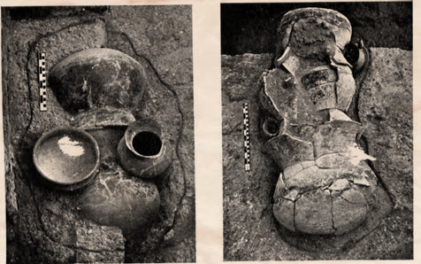<figcaption>Figure fig_ch02_p021_79 (Page 21)</figcaption></figure>
  <figure class="diagram-card" id="fig_ch02_p021_80">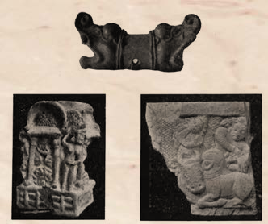<figcaption>Figure fig_ch02_p021_80 (Page 21)</figcaption></figure>
  <figure class="diagram-card" id="fig_ch02_p021_81"><figcaption>Figure fig_ch02_p021_81 (Page 21)</figcaption></figure>
  <figure class="diagram-card" id="fig_ch02_p021_82"><figcaption>Figure fig_ch02_p021_82 (Page 21)</figcaption></figure>
  <figure class="diagram-card" id="fig_ch02_p021_83"><figcaption>Figure fig_ch02_p021_83 (Page 21)</figcaption></figure>
  <figure class="diagram-card" id="fig_ch02_p021_84"><figcaption>Figure fig_ch02_p021_84 (Page 21)</figcaption></figure>
  <figure class="diagram-card" id="fig_ch02_p021_85"><figcaption>Figure fig_ch02_p021_85 (Page 21)</figcaption></figure>
  <figure class="diagram-card" id="fig_ch02_p021_86"><figcaption>Figure fig_ch02_p021_86 (Page 21)</figcaption></figure>
  <figure class="diagram-card" id="fig_ch02_p021_87"><figcaption>Figure fig_ch02_p021_87 (Page 21)</figcaption></figure>
  <figure class="diagram-card" id="fig_ch02_p021_88"><figcaption>Figure fig_ch02_p021_88 (Page 21)</figcaption></figure>
  <figure class="diagram-card" id="fig_ch02_p021_89"><figcaption>Figure fig_ch02_p021_89 (Page 21)</figcaption></figure>
  <figure class="diagram-card" id="fig_ch02_p021_90"><figcaption>Figure fig_ch02_p021_90 (Page 21)</figcaption></figure>
  <figure class="diagram-card" id="fig_ch02_p021_91"><figcaption>Figure fig_ch02_p021_91 (Page 21)</figcaption></figure>
  <figure class="diagram-card" id="fig_ch02_p021_92"><figcaption>Figure fig_ch02_p021_92 (Page 21)</figcaption></figure>
  <figure class="diagram-card" id="fig_ch02_p021_93"><figcaption>Figure fig_ch02_p021_93 (Page 21)</figcaption></figure>
  <figure class="diagram-card" id="fig_ch02_p021_94"><figcaption>Figure fig_ch02_p021_94 (Page 21)</figcaption></figure>
  <figure class="diagram-card" id="fig_ch02_p021_95"><figcaption>Figure fig_ch02_p021_95 (Page 21)</figcaption></figure>
  <figure class="diagram-card" id="fig_ch02_p021_96"><figcaption>Figure fig_ch02_p021_96 (Page 21)</figcaption></figure>
  <figure class="diagram-card" id="fig_ch02_p021_97"><figcaption>Figure fig_ch02_p021_97 (Page 21)</figcaption></figure>
  <figure class="diagram-card" id="fig_ch02_p021_98"><figcaption>Figure fig_ch02_p021_98 (Page 21)</figcaption></figure>
  <figure class="diagram-card" id="fig_ch02_p021_99"><figcaption>Figure fig_ch02_p021_99 (Page 21)</figcaption></figure>
  <figure class="diagram-card" id="fig_ch02_p021_100"><figcaption>Figure fig_ch02_p021_100 (Page 21)</figcaption></figure>
  <figure class="diagram-card" id="fig_ch02_p021_101"><figcaption>Figure fig_ch02_p021_101 (Page 21)</figcaption></figure>
  <figure class="diagram-card" id="fig_ch02_p021_102"><figcaption>Figure fig_ch02_p021_102 (Page 21)</figcaption></figure>
  <figure class="diagram-card" id="fig_ch02_p021_103"><figcaption>Figure fig_ch02_p021_103 (Page 21)</figcaption></figure>
  <figure class="diagram-card" id="fig_ch02_p021_104"><figcaption>Figure fig_ch02_p021_104 (Page 21)</figcaption></figure>
  <figure class="diagram-card" id="fig_ch02_p021_105"><figcaption>Figure fig_ch02_p021_105 (Page 21)</figcaption></figure>
  <figure class="diagram-card" id="fig_ch02_p021_106"><figcaption>Figure fig_ch02_p021_106 (Page 21)</figcaption></figure>
  <figure class="diagram-card" id="fig_ch02_p021_107"><figcaption>Figure fig_ch02_p021_107 (Page 21)</figcaption></figure>
  <figure class="diagram-card" id="fig_ch02_p021_108"><figcaption>Figure fig_ch02_p021_108 (Page 21)</figcaption></figure>
  <figure class="diagram-card" id="fig_ch02_p021_109"><figcaption>Figure fig_ch02_p021_109 (Page 21)</figcaption></figure>
  <figure class="diagram-card" id="fig_ch02_p021_110"><figcaption>Figure fig_ch02_p021_110 (Page 21)</figcaption></figure>
  <figure class="diagram-card" id="fig_ch02_p021_111"><figcaption>Figure fig_ch02_p021_111 (Page 21)</figcaption></figure>
  <figure class="diagram-card" id="fig_ch02_p021_112"><figcaption>Figure fig_ch02_p021_112 (Page 21)</figcaption></figure>
  <figure class="diagram-card" id="fig_ch02_p021_113"><figcaption>Figure fig_ch02_p021_113 (Page 21)</figcaption></figure>
  <figure class="diagram-card" id="fig_ch02_p021_114"><figcaption>Figure fig_ch02_p021_114 (Page 21)</figcaption></figure>
  <figure class="diagram-card" id="fig_ch02_p021_115"><figcaption>Figure fig_ch02_p021_115 (Page 21)</figcaption></figure>
  <figure class="diagram-card" id="fig_ch02_p021_116"><figcaption>Figure fig_ch02_p021_116 (Page 21)</figcaption></figure>
  <figure class="diagram-card" id="fig_ch02_p021_117"><figcaption>Figure fig_ch02_p021_117 (Page 21)</figcaption></figure>
  <figure class="diagram-card" id="fig_ch02_p021_118"><figcaption>Figure fig_ch02_p021_118 (Page 21)</figcaption></figure>
  <figure class="diagram-card" id="fig_ch02_p021_119"><figcaption>Figure fig_ch02_p021_119 (Page 21)</figcaption></figure>
  <figure class="diagram-card" id="fig_ch02_p021_120"><figcaption>Figure fig_ch02_p021_120 (Page 21)</figcaption></figure>
  <figure class="diagram-card" id="fig_ch02_p021_121"><figcaption>Figure fig_ch02_p021_121 (Page 21)</figcaption></figure>
  <figure class="diagram-card" id="fig_ch02_p021_122"><figcaption>Figure fig_ch02_p021_122 (Page 21)</figcaption></figure>
  <figure class="diagram-card" id="fig_ch02_p021_123"><figcaption>Figure fig_ch02_p021_123 (Page 21)</figcaption></figure>
  <figure class="diagram-card" id="fig_ch02_p021_124"><figcaption>Figure fig_ch02_p021_124 (Page 21)</figcaption></figure>
  <figure class="diagram-card" id="fig_ch02_p021_125"><figcaption>Figure fig_ch02_p021_125 (Page 21)</figcaption></figure>
  <figure class="diagram-card" id="fig_ch02_p021_126"><figcaption>Figure fig_ch02_p021_126 (Page 21)</figcaption></figure>
  <figure class="diagram-card" id="fig_ch02_p021_127"><figcaption>Figure fig_ch02_p021_127 (Page 21)</figcaption></figure>
  <figure class="diagram-card" id="fig_ch02_p021_128"><figcaption>Figure fig_ch02_p021_128 (Page 21)</figcaption></figure>
  <figure class="diagram-card" id="fig_ch02_p021_129"><figcaption>Figure fig_ch02_p021_129 (Page 21)</figcaption></figure>
  <figure class="diagram-card" id="fig_ch02_p021_130"><figcaption>Figure fig_ch02_p021_130 (Page 21)</figcaption></figure>
  <figure class="diagram-card" id="fig_ch02_p021_131"><figcaption>Figure fig_ch02_p021_131 (Page 21)</figcaption></figure>
  <figure class="diagram-card" id="fig_ch02_p021_132"><figcaption>Figure fig_ch02_p021_132 (Page 21)</figcaption></figure>
  <figure class="diagram-card" id="fig_ch02_p021_133"><figcaption>Figure fig_ch02_p021_133 (Page 21)</figcaption></figure>
  <figure class="diagram-card" id="fig_ch02_p021_134"><figcaption>Figure fig_ch02_p021_134 (Page 21)</figcaption></figure>
  <figure class="diagram-card" id="fig_ch02_p021_135"><figcaption>Figure fig_ch02_p021_135 (Page 21)</figcaption></figure>
  <figure class="diagram-card" id="fig_ch02_p021_136"><figcaption>Figure fig_ch02_p021_136 (Page 21)</figcaption></figure>
  <figure class="diagram-card" id="fig_ch02_p021_137"><figcaption>Figure fig_ch02_p021_137 (Page 21)</figcaption></figure>
  <figure class="diagram-card" id="fig_ch02_p021_138"><figcaption>Figure fig_ch02_p021_138 (Page 21)</figcaption></figure>
  <figure class="diagram-card" id="fig_ch02_p021_139"><figcaption>Figure fig_ch02_p021_139 (Page 21)</figcaption></figure>
  <div class="page-content">
    <p>”›šuśÆ†›ų§Œ¢ųšĞ§<br>ǢšÄ¢Å§-&lt;<br>21<br>”›š iˆsŽā¡‘ÚšÇ ¡xƠ§ iˆsŽāÇڝǬ ¢ŒŶsÇ<br>m¡Ŧƽšc?<br>z<br>e†¢šzDzŒšfՂ››cŽžˆĹ›c Œšǯš†šsc<br>z<br>sž}‚Æsšc†›†›Æڝc<br>z<br>z<br>‚šƤ”›šuc(Chalcolithic Age)<br>”›šu¡Ĺڝ›ă§ †ƣÇ ¢†Ž¡Ĺ<br>xÅă¡xƫ“¢ƽš ¡xƠ§<br>¡sšĬǬiˆsŽāÇiˆ¢šu›ă sšvĞśc Œ†•DzÅ”›š<br>…āÇi¢ˆä›ă›ƽ”›šiˆsŽāǡښƀc ¡xƠ§iˆsŽ<br>ā‘ciˆ¢šu›ăhsš¡Ĺ ‚šƤ”›šu¡Œųš§“›‘›Úų‚§<br>gŦDz›Æ ŽšzǚšÄ Œ…DzƂ¢„”§ Œ—šŽšȹ mų›“›}ā‘›Æ †›ų§<br>‚šƤ”›šuś¡ź†›Ž“…›e“”›ǐāÇs¡Ĭś›ĞĬ§<br>¡“ÿuc(Bronze Age)<br>Š›–›g6000 †c3000†cg}›ÆŒ†•DZÅsš‘¡}csšǮ›¡źc<br>”Þ›¡ Ƃ¢šz†¡ƀ}ĹšÄ ˆ~›ă sƀc xâ“Ĭ›c<br>“ĕ›c iˆ¢šu›ÚšÄ ‚}ā› ¢š—–cǗŽ“›„DZc sž}‚Æ<br>“›sš–c ¢†}›‚ƉŒš›Օ›“DZšˆsŒš“scŒ›¢ăšÆˆš„†c<br>–š…DZŒš“sc ¡xƪ sšÅ•›¢s‚Ž iƈš„†āÇ ”ÞŒš“sc<br>Œ†•DZÅe‚›ž¡} †šuŽ›szœ“›‚Ĺ›†§–Ǵc –ċŒšssc¡xƪ<br>¢ušÅÄ£xƧ ŒšÄ¢Œs§–§—›c¡–Ɖ§<br>Œ†•DZÄ–Ǵc †›Åƣ›Úų
<br>£„ŒšŠš„›ÆŒ—šŽšȹ
†›ųc ‹›ă ”“<br>–cǘšŽĹ›†ˆ¢šu›ă›Žųs”āÇ<br>¡†“š–š›ÆŒ—šŽšȹ
†›ųc<br>‹›ăs‘›ŒĴ›c ”››c<br>‚œÅĹsš†›Åƣ›‚›sÇ<br>–cǘšŽĹ›<br>Ĺ †ˆ¢šu›ă›Žųs”āÇ<br>‚œÅĹsš†›Åƣ›‚›sÇ<br>£„ŒšŠš„›Æ<br>„<br>Œ—šŽšȹ
†›ųc ‹›ă ”“<br>–cǘšŽĹ›<br>Ĺ †ˆ¢šu›ă›Žų s”āÇ<br>¡†“š–š›Æ<br><br>Œ—šŽšȹ
†›ųc<br>‹›ă s‘›‘ ŒĴ›<br>Ĵ<br>c ”›<br>” ›<br> c</p>
  </div>
</section>
<section class="page-section" id="page-22">
  <div class="page-header"><span class="page-number">Page 22</span></div>
  <figure class="diagram-card" id="fig_ch02_p022_01"><figcaption>Figure fig_ch02_p022_01 (Page 22)</figcaption></figure>
  <figure class="diagram-card" id="fig_ch02_p022_02"><figcaption>Figure fig_ch02_p022_02 (Page 22)</figcaption></figure>
  <figure class="diagram-card" id="fig_ch02_p022_03"><figcaption>Figure fig_ch02_p022_03 (Page 22)</figcaption></figure>
  <figure class="diagram-card" id="fig_ch02_p022_04"><figcaption>Figure fig_ch02_p022_04 (Page 22)</figcaption></figure>
  <figure class="diagram-card" id="fig_ch02_p022_05"><figcaption>Figure fig_ch02_p022_05 (Page 22)</figcaption></figure>
  <figure class="diagram-card" id="fig_ch02_p022_06"><figcaption>Figure fig_ch02_p022_06 (Page 22)</figcaption></figure>
  <figure class="diagram-card" id="fig_ch02_p022_07"><figcaption>Figure fig_ch02_p022_07 (Page 22)</figcaption></figure>
  <figure class="diagram-card" id="fig_ch02_p022_08"><figcaption>Figure fig_ch02_p022_08 (Page 22)</figcaption></figure>
  <figure class="diagram-card" id="fig_ch02_p022_09"><figcaption>Figure fig_ch02_p022_09 (Page 22)</figcaption></figure>
  <figure class="diagram-card" id="fig_ch02_p022_10"><figcaption>Figure fig_ch02_p022_10 (Page 22)</figcaption></figure>
  <figure class="diagram-card" id="fig_ch02_p022_11"><figcaption>Figure fig_ch02_p022_11 (Page 22)</figcaption></figure>
  <figure class="diagram-card" id="fig_ch02_p022_12"><figcaption>Figure fig_ch02_p022_12 (Page 22)</figcaption></figure>
  <figure class="diagram-card" id="fig_ch02_p022_13"><figcaption>Figure fig_ch02_p022_13 (Page 22)</figcaption></figure>
  <figure class="diagram-card" id="fig_ch02_p022_14"><figcaption>Figure fig_ch02_p022_14 (Page 22)</figcaption></figure>
  <figure class="diagram-card" id="fig_ch02_p022_15"><figcaption>Figure fig_ch02_p022_15 (Page 22)</figcaption></figure>
  <figure class="diagram-card" id="fig_ch02_p022_16"><figcaption>Figure fig_ch02_p022_16 (Page 22)</figcaption></figure>
  <div class="page-content">
    <p>e…Dzšc<br>–šŒž—Dz”šȼc-<br>22<br>†šuŽ›szœ“›‚Ĺ›¢ÚǬŒ†•DzŽ¡}s}ų“Ž“›¡†Ú›ăǬ<br>“›“ŽŒš›‚§ pŽ Ƃ¢„”ŧ z†āÇ ‚›ā›ƀšÅڝų‚c<br>ˆs‚››¢¡¢ƀŽc sšÅ•›¢s‚ŽƂ“Åņā‘š “›“›…‚Žc<br>£s¡Ĺš’›sÇ sŽs­”Ƃ“ÅņāÇ să“}c ‚}ā›<br>“›ÆnÅ¡ƀЧiˆzœ“†c†}ŝų‚Œšǚ›‚›“›¢”•Œš§<br>͆šuŽ›s‚Îmų§“›¢”•›ƀ›Úų‚§“›”šŒš “œƒ›s‘c¡ˆš‚<br>¡sĞ›}ā‘c ¡Œă¡ƀĞ<br>–­sŽDzā‘c ‚›Ž¢Ú› zœ“›‚“c<br>“›¢†š„ā‘c †uŽzœ“›‚Ĺ›¡ź –“›¢”•‚s‘š§ ͆šuŽ›sÎ<br>zœ“›‚Ĺ›†§ fŽc‹cs›ă‚§ ¡“ÿuśš¡ų§ †›āÇ<br>ˆ~›ă›ĞĬ¢ƽš?<br>¡“ÿu–cǘšŽāÇn¡‚ƽš¡Œų§ˆĞ›s¡ƀ}Ĺs<br>z<br>z<br>z<br>z<br>¡“ÿuśÆgŦDz›Æ“›sš–cƂšˆ›ă‚š§—ŽƀĖcǘšŽc<br>—Žƀ¢Œš—Ä¡zš„š¢Žš¢šƒÆ‚}ā› †uŽāÇf–žŅ›‚Œš›<br>†›Åƣ›ă ¡ˆš‚¡sĞ›}āÇ“› s‘c(Great Bath), “œ}sÇ¡‚Ž<br>“œƒ›sÇe’ÚxšsÇ…š†DzƀŽsÇmų›“c“›“›…<br>‚Žc£s¡Ĺš’›s‘¡}csă“}ś¡źc–šų›…Dz“c<br>g“›}¡Ĺ †uŽ“Æڎ¡Ĺ †ŒÚ§“DzތšÚ›ĹŽų<br>e‚¡sšĬš§ —ŽƀĖcǘšŽ¡Ĺ gŦDzšxŽ›ŅśÆ<br>ÍpųDZ†uŽ“ÆڎcÎmų§“›¢”•›ƀ›Úų‚§<br>¢“„sšc(Vedic Age)<br>—ŽƀĖcǘšŽĹ›¡ź ‚sÅăƩ¢”•c –ž–›Ű gŦDz<br>¡}“}Ú§ˆ}›Ěš§
Ƃ¢„”ŧs}ų“ų‚§fŽDzŶš<br>Žš›ŽųgÄ¢šž¢šˆDzÄ‹š•šs}cŠĹ›ÆiÇ¡ƀ<br>}ų ‹š• –c–šŽ›ă›Žų“Žš›ŽųfŽDzŶšÅ‹š•šˆŽ<br>Œš ¡‚‘›“s‘¡}e}›ǚš†Ĺ›ÆfŽDzŶšŽ¡}zŶ¢„”c<br>Œ¢…Dz•Dzš¡ų§sŽ‚¡ƀ}ų<br>¢“„ā‘›Æ †›ųŒš§ h sšvĞ¡Ĺڝ›ăǬ<br>e›“sdžŒÚ§‹›Úų‚§e‚›†šÆhsš¡Ĺ<br>¢“„sš¡Œų§ “›‘›Úų Š›–›g 1500 †c 600 †c<br>g}›š§¢“„sšc<br>gÄ¢š<br>ž¢šƀDzÄ‹š•sÇ<br>–cȿ‚c ĹœÄ ÷œÚ§<br>zÅƣÄgcøœ•§–ǵœ›•§<br>•DzÄ ¢ˆš‘›•§ gǯš<br>›Ä ǝš†›•§ Ƌĕ§<br>Œš†›Ämųœ ‹š•sÇ<br>g‚›ÆiÇ¡ƀ}ų<br>–ž–›ŰƂ¢„”c<br>–›Ű†„›c e‚›¡ź<br>¢ˆš•s†„›s‘c iÇ¡ƀ<br>}ų Ƃ¢„”Œš§ –ž<br>–›ŰƂ¢„”c<br>¡“ÿcq}§
<br>(Bronze)<br>¡xƠc (Copper)<br>¡“‘Ĺœ“c<br>(Tin) ¢xÅŧ<br>–cǘŽ›ăĬšÚų<br>¢š—–ÿŽŒš§<br>¡“ÿc¡xƠ›¢†<br>ښÇiƀ ‹›<br>ڝų ¢š—Œš§<br>¡“ÿc<br>¡“ÿ</p>
  </div>
</section>
<section class="page-section" id="page-23">
  <div class="page-header"><span class="page-number">Page 23</span></div>
  <figure class="diagram-card" id="fig_ch02_p023_01"><figcaption>Figure fig_ch02_p023_01 (Page 23)</figcaption></figure>
  <figure class="diagram-card" id="fig_ch02_p023_02"><figcaption>Figure fig_ch02_p023_02 (Page 23)</figcaption></figure>
  <figure class="diagram-card" id="fig_ch02_p023_03"><figcaption>Figure fig_ch02_p023_03 (Page 23)</figcaption></figure>
  <figure class="diagram-card" id="fig_ch02_p023_04"><figcaption>Figure fig_ch02_p023_04 (Page 23)</figcaption></figure>
  <figure class="diagram-card" id="fig_ch02_p023_05"><figcaption>Figure fig_ch02_p023_05 (Page 23)</figcaption></figure>
  <figure class="diagram-card" id="fig_ch02_p023_06"><figcaption>Figure fig_ch02_p023_06 (Page 23)</figcaption></figure>
  <figure class="diagram-card" id="fig_ch02_p023_07"><figcaption>Figure fig_ch02_p023_07 (Page 23)</figcaption></figure>
  <figure class="diagram-card" id="fig_ch02_p023_08"><figcaption>Figure fig_ch02_p023_08 (Page 23)</figcaption></figure>
  <figure class="diagram-card" id="fig_ch02_p023_09"><figcaption>Figure fig_ch02_p023_09 (Page 23)</figcaption></figure>
  <figure class="diagram-card" id="fig_ch02_p023_10"><figcaption>Figure fig_ch02_p023_10 (Page 23)</figcaption></figure>
  <figure class="diagram-card" id="fig_ch02_p023_11"><figcaption>Figure fig_ch02_p023_11 (Page 23)</figcaption></figure>
  <figure class="diagram-card" id="fig_ch02_p023_12"><figcaption>Figure fig_ch02_p023_12 (Page 23)</figcaption></figure>
  <figure class="diagram-card" id="fig_ch02_p023_13"><figcaption>Figure fig_ch02_p023_13 (Page 23)</figcaption></figure>
  <figure class="diagram-card" id="fig_ch02_p023_14"><figcaption>Figure fig_ch02_p023_14 (Page 23)</figcaption></figure>
  <figure class="diagram-card" id="fig_ch02_p023_15"><figcaption>Figure fig_ch02_p023_15 (Page 23)</figcaption></figure>
  <figure class="diagram-card" id="fig_ch02_p023_16"><figcaption>Figure fig_ch02_p023_16 (Page 23)</figcaption></figure>
  <figure class="diagram-card" id="fig_ch02_p023_17"><figcaption>Figure fig_ch02_p023_17 (Page 23)</figcaption></figure>
  <figure class="diagram-card" id="fig_ch02_p023_18"><figcaption>Figure fig_ch02_p023_18 (Page 23)</figcaption></figure>
  <figure class="diagram-card" id="fig_ch02_p023_19"><figcaption>Figure fig_ch02_p023_19 (Page 23)</figcaption></figure>
  <figure class="diagram-card" id="fig_ch02_p023_20"><figcaption>Figure fig_ch02_p023_20 (Page 23)</figcaption></figure>
  <figure class="diagram-card" id="fig_ch02_p023_21"><figcaption>Figure fig_ch02_p023_21 (Page 23)</figcaption></figure>
  <figure class="diagram-card" id="fig_ch02_p023_22"><figcaption>Figure fig_ch02_p023_22 (Page 23)</figcaption></figure>
  <figure class="diagram-card" id="fig_ch02_p023_23"><figcaption>Figure fig_ch02_p023_23 (Page 23)</figcaption></figure>
  <figure class="diagram-card" id="fig_ch02_p023_24"><figcaption>Figure fig_ch02_p023_24 (Page 23)</figcaption></figure>
  <figure class="diagram-card" id="fig_ch02_p023_25"><figcaption>Figure fig_ch02_p023_25 (Page 23)</figcaption></figure>
  <figure class="diagram-card" id="fig_ch02_p023_26"><figcaption>Figure fig_ch02_p023_26 (Page 23)</figcaption></figure>
  <figure class="diagram-card" id="fig_ch02_p023_27"><figcaption>Figure fig_ch02_p023_27 (Page 23)</figcaption></figure>
  <div class="page-content">
    <p>”›šuśÆ†›ų§Œ¢ųšĞ§<br>ǢšÄ¢Å§-&lt;<br>23<br>¢“„–š—›‚Dzc<br>Í¢“„cÎ mųšÆ e›“§<br>“›„§
 mųš§ eŃc<br>¢“„āÇ †š¡ĴŒš§<br>e“k¢uǵ„czžÅ¢“„c<br>–šŒ¢“„c eƒÅ“¢“„c<br>mų›“š§  g“›Æ<br>k¢uǵ„Œš§ f„Dz¢Ĺ‚§<br>†š¢“„āÇ sž}š¡‚<br>e†ŠŰā‘š›ƖšǦ<br>āÇ fŽDzsāÇ<br>iˆ†›•ĹsÇ mų›<br>“  c  ¢ “ „ – š — › ‚ Dz<br>ś¡ź ‹šuŒš§ ¢“„<br>sš¡Ĺڝ›ăǬˆ~†<br>ś†šǬnǯ“cƂ…š<br>†¡ƀĞ¢ǟš‚ǡš§¢“„<br>–š—›‚Dzc<br>f„Dzsš ¢“„sšc<br>ˆ›Æښ ¢“„sšc<br>z<br>–ž–›ŰƂ¢„”c<br>z<br>g}–Ơ„§“Dz“ǚ<br>z<br>eŅ†š¢}š}›sÇ<br>z<br>–Œž—Ĺ›Æ<br>ȼœsÇÚ§‚šŽ‚¢ŒDz†<br>iÅų ǚš†c<br>z<br>sš}§¡“Ğ›¡Ĺ‘›ăc<br>‚œ›ĞcՕ›¡xƫ<br>z<br>†›Ž“…›¢ušŅāÇ<br>¢xÅų‚š›Žų<br>–Œž—c<br>z<br>šuāǐ‘›‚“c<br>q¢Žšs}cŠ†šƒ†c<br>¡xƮš“ų“Œš›<br>Žų<br>z<br>ƂՂ›”Þ›s¡‘<br>fŽš…›ă<br>z ucuš–Œ‚c“¡Ž “Dzšˆ›ă<br>z<br>Օ›Ú§Ƃ…š†Dzc†Æs›<br>z ǚ›Ž“š–zœ“›‚c<br>z ȼœs‘¡}–šŒž—›sˆ„“›Ú§<br>Œā¢ǯ<br>z<br>gŽƠ›¡źiˆ¢šuc<br>z “ÅĴ“Dz“ǚ”Þ›¡ƀ}ų<br>z<br>šuāÇ–ÿœÅĴ“c¡x<br>¢“›‚Œš›šuāÇ<br>pŽƂ¢‚Dzs“›‹šuś¡ź<br>ŒšŅce…›sšŽŒš›Œš›<br>z<br>Ƃ¢‚DzsfŽš…†šŒžÅśsÇ<br>Žžˆ¡ƀ}ų<br>z“›“›…sŽs­”“›„Dzs‘¡}<br>‚}Úc<br>“ÅĴ“Dz“ǚ<br>“ÅĴādžš¡Ĵc<br>iĬš›Žųˆ­¢Žš<br>—›‚DzśÆnÅ¡ƀĞ“Å<br>ƖšǦŽcŽšzDz‹Ž“c<br>–cŽä“c†}ś“Å<br>äŅ›ŽcՕ››c<br>să“}ścnÅ¡ƀĞ›<br>Žų“Å£“”DzŽch<br>Œžų§“›‹šuāÇڝc<br>„š–Dzƾś ¡xƫ›Žų“Å<br>”žŝŽcf›Žų<br>‚Dzc<br>f„Dzsš ¢“„sšĹ›¡c ˆ›Æښ ¢“„sšĹ›¡c<br>z†zœ“›‚¡Ĺ†ŒÚ§‚šŽ‚ŒDzc¡xƮDZ<br>¢“„sš¡ĹŽĬš›‚Žc‚›Ž›Úų<br>¢“„<br>sšc<br>f„Dzsš ¢“„sšc<br>k¢uǵ„cŽx›ăsšc
<br>ˆ›Æښ ¢“„sšc<br>zžÅ–šŒeƒÅ“<br>¢“„āÇŽx›ăsšc
<br>”›šuśÆ †›ų§ ¢š—uś¢ÚǬ ŒšǯāÇ –cŠŰ›ă§<br>pŽ¡–Œ›†šÅ–cv}›ƀ›Ús</p>
  </div>
</section>
<section class="page-section" id="page-24">
  <div class="page-header"><span class="page-number">Page 24</span></div>
  <figure class="diagram-card" id="fig_ch02_p024_01"><figcaption>Figure fig_ch02_p024_01 (Page 24)</figcaption></figure>
  <figure class="diagram-card" id="fig_ch02_p024_02"><figcaption>Figure fig_ch02_p024_02 (Page 24)</figcaption></figure>
  <figure class="diagram-card" id="fig_ch02_p024_03"><figcaption>Figure fig_ch02_p024_03 (Page 24)</figcaption></figure>
  <figure class="diagram-card" id="fig_ch02_p024_04"><figcaption>Figure fig_ch02_p024_04 (Page 24)</figcaption></figure>
  <figure class="diagram-card" id="fig_ch02_p024_05"><figcaption>Figure fig_ch02_p024_05 (Page 24)</figcaption></figure>
  <figure class="diagram-card" id="fig_ch02_p024_06"><figcaption>Figure fig_ch02_p024_06 (Page 24)</figcaption></figure>
  <div class="page-content">
    <p>e…Dzšc<br>–šŒž—Dz”šȼc-<br>24<br>Œš†“xŽ›Ņś¡ź ‚}ړc sšâŒĹ›Ĭš “›sš–ā‘Œš§<br>hˆš~‹šuŧ†ƣÇsĬ‚§sšĞ›c u—s‘›cŒŽ¡ƀšĹs‘›c<br>zœ“›ă§ƂՂ›¢š}cƜuā¢‘š}c¡ˆšŽ‚›“›¢“s“cŠŗ›”Þ›c<br>¡sšĬ Œ¢ųšĞǬ Ƃšc ‚}ā› Œ†•DzÅ ‚¡ź f“”DzāÇ<br>Œ†ǡ›šÚ›e‚›††Ǖ‚ŒšsĬˆ›}Ĺā‘cǕǐ›s‘c†}ś<br>ˆ¢Žšu‚›¡}ˆš‚›¢›pŽ†šuŽ›sŽš›Œš›Œ†•DzÅe“Ž¡}<br>‚š–šŒž—›sŽšȹœ–šƠśs–c“›…š†āÇŽžˆ¡ƀ}Ĺ›gų§<br>21šc †žǯšĬ›¢Ú§ mś†›Æڝ¢ƠšÇ Œš†“xŽ›Ņś¡ź “›“›…<br>“›sš–vĞā‘›¢Ú§ ‚›Ž›Ě¢†šÚ¢ƠšÇ Œ†•DzÅ mŅ„žŽc<br>Œ¢ųšĞ¢ˆš› mų§ †ŒÚ§ e›“š†c Œ†ǡ›šÚ“š†c –š…›<br>ڝų<br>z<br>f„DzsšŒ†•DzÅ<br>iˆ¢šu›ă›Žų<br>f…ā‘¡}c<br>iˆsŽā‘¡}c<br>x›ŅāÇiÇ¡ƀ}Ĺ› ›z›ǯÆfƊcfƊc‚ƮššÚs<br>z “›“›… ”›šuvĞā‘›¡Œ†•DzÅiˆ¢šu›ă›Žųf…āÇiˆsŽāÇ<br>mų›“¡}ŒšĶssdž›Åƣ›ă§–šŒž—Dz”šȼ㚖›ÆƂ„Å”›ƀ›Ús<br>z Œš†“xŽ›Ņˆ¢Žšu‚›¡}Ƃ…š†ŒšǯāÇiÇ¡ƀ}Ĺ›pŽ›z›ǯÆƂ–¢ź•Ä<br>e“‚Ž›ƀ›Ús<br>z<br>f„DzsšŒ†•Dzzœ“›‚“Œš› ŠŰ¡ƀĞ ǚāÇ e}š‘¡ƀ}Ĺ› eǯ§–§<br>†›Åƣ›Ús<br>‚}ÅƂ“ÅņāÇ</p>
  </div>
</section>
<section class="page-section" id="page-25">
  <div class="page-header"><span class="page-number">Page 25</span></div>
  <figure class="diagram-card" id="fig_ch02_p025_01"><figcaption>Figure fig_ch02_p025_01 (Page 25)</figcaption></figure>
  <figure class="diagram-card" id="fig_ch02_p025_02"><figcaption>Figure fig_ch02_p025_02 (Page 25)</figcaption></figure>
  <figure class="diagram-card" id="fig_ch02_p025_03"><figcaption>Figure fig_ch02_p025_03 (Page 25)</figcaption></figure>
  <figure class="diagram-card" id="fig_ch02_p025_04"><figcaption>Figure fig_ch02_p025_04 (Page 25)</figcaption></figure>
  <figure class="diagram-card" id="fig_ch02_p025_05"><figcaption>Figure fig_ch02_p025_05 (Page 25)</figcaption></figure>
  <figure class="diagram-card" id="fig_ch02_p025_06"><figcaption>Figure fig_ch02_p025_06 (Page 25)</figcaption></figure>
  <figure class="diagram-card" id="fig_ch02_p025_07"><figcaption>Figure fig_ch02_p025_07 (Page 25)</figcaption></figure>
  <figure class="diagram-card" id="fig_ch02_p025_08"><figcaption>Figure fig_ch02_p025_08 (Page 25)</figcaption></figure>
  <figure class="diagram-card" id="fig_ch02_p025_09"><figcaption>Figure fig_ch02_p025_09 (Page 25)</figcaption></figure>
  <div class="page-content">
    <p>f”ā‘c<br>f„DzsšŽšȹā‘c<br>2<br>‘–›ŗšÅƒÄŽšz“œƒ››ž¡}ŽƒĹ›Æ<br>–ĕŽ›Ú¢ƠšÇ‚œÅŝce“”†š<br>pŽƾŗ¡†sĬeƺcs’›Ě¢ƀšÇ<br>uŽ‚ŽŒš¢ŽšucŠš…›ă§“›ƩųpŽ<br>Œ†•Dz¡†csšsĬš›e‚s’›<br>Ě¢ƀšÇ¡“Ǭŝ›ˆ‚ƀ›ă§x}<br>sšĞ›¢Ú§“›ˆ›ă¡sšĬ§f‘sÇ<br>xŒ›¢ǯ›¡ÚšĬ ¢ˆšsųpŽ<br>”“”ŽœŽ“csĬ¢“„†šz†sŒšh<br>sš’§xsÇڝ¢”•ce¢Ŕ—c ¡‚Ž“›Æ<br>‹›ä¡}ÚųpŽ–†Dzš–›¡<br>sšsĬš›‹­‚›s„dtā¡‘šųc<br>gƽš¡‚”šŦ†šc–¢Ŧš•¢Ĺš¡}c<br>sš¡ƀĞh–†Dzš–›–›ŗšÅƒ¡†<br>fsŕ›ăg‚š§e¢Ŕ—¡Ĺ<br>”šŦ›c–Œš…š†“c ¢†}š†ǬŒšÅuc<br>–†Dzš–Œš¡ų‚œŽŒš†Ĺ›¡Ĺ›ă‚§’<br>mmÆŠš•DZ„›“ĬÅ„šǯ§ “š–§gŦDz<br>Žžˆ<br>sƠ†›
<br>Š›–›g6šc†žǯšĬ›ÆgŦDz›Æzœ“›ă›Žų‚‚ǵx›Ŧs†šu­‚ŒŠŗ¡źzœ“›‚<br>“Œš› ŠŰ¡ƀĞ pŽ –c‹“sƒš›‚§ ŽšzsŒšŽ†š› –Ơų‚›c –t¢š<br>ˆ‚›c zœ“›ă›Ğc –¢Ŧš•c ‹›Úš‚›Žų –›ŗšÅƒ¡ź zœ“›‚Ĺ›Æ “’›Ĺ›Ž›“<br>ĬšÚ›–c‹“Œš§g‚›Æ“›“Ž›Úų‚§‚¡źxǯˆš}ŒǬŒ†•DzŽ¡}„dtā‘¡}<br>sšŽc e¢†ǵ•›ă§ –†Dzš–c –ǵœsŽ›ă –›ŗšÅƒÄ čš¢†š„c ¢†}› ˆ›ÆښĹ§<br>u­‚ŒŠŗÄmų›¡ƀН</p>
  </div>
</section>
<section class="page-section" id="page-26">
  <div class="page-header"><span class="page-number">Page 26</span></div>
  <figure class="diagram-card" id="fig_ch02_p026_01"><figcaption>Figure fig_ch02_p026_01 (Page 26)</figcaption></figure>
  <figure class="diagram-card" id="fig_ch02_p026_02"><figcaption>Figure fig_ch02_p026_02 (Page 26)</figcaption></figure>
  <figure class="diagram-card" id="fig_ch02_p026_03"><figcaption>Figure fig_ch02_p026_03 (Page 26)</figcaption></figure>
  <figure class="diagram-card" id="fig_ch02_p026_04"><figcaption>Figure fig_ch02_p026_04 (Page 26)</figcaption></figure>
  <figure class="diagram-card" id="fig_ch02_p026_05"><figcaption>Figure fig_ch02_p026_05 (Page 26)</figcaption></figure>
  <figure class="diagram-card" id="fig_ch02_p026_06">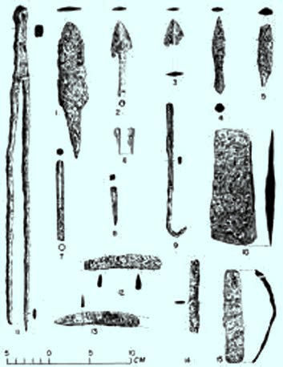<figcaption>Figure fig_ch02_p026_06 (Page 26)</figcaption></figure>
  <div class="page-content">
    <p>–šŒž—Dz”šȼc-<br>26<br>e…Dzšc<br>f„DzsšgŽƠˆsŽāÇ<br>Š›–›g 6šc †žǯšĬ§ ¢šsxŽ›Ņś¡ Nj¢ŗŒš sšvĞ<br>Œš›Žų gŦDz›Æ “Å…Œš† Œ—š“œŽÄ u­‚ŒŠŗÄ gš†›Æ<br>–Ž‚ȹ£x†›ÆsÉDzž•Dz–§÷œ–›Æ¡—šã›ǯ–§‚}ā›“Å<br>ˆ‚›f”āÇƂxŽ›ƀ›ăsšŒš›Žųg‚§¢šsśšsŒš†c<br>–šƠśsŽšȹœŽcuā‘›cŒšǯāÇƂ‚Dzä¡ƀĞhsšvĞ<br>śÆˆ‚›Žšȹ–c“›…š†ā‘c†›“›Æ“ųeŎcŒšǯā¡‘<br>ڝ›ăš§he…DzšĹ›Æ†šcxÅă¡xƮų‚§<br>ucuš‚}ś¡f”“›ƃ“c<br>Š›–›g fšc †žǯšĬ›Æ gŦDz›Æ ˆ‚›<br>f”āÇ Žžˆc¡sšĬ‚§ Ƃ…š†Œšc ucuš<br>‚}śš›Žų †“œ†š”ā‘¡} “‘Å㍛Æ<br>ucuš‚}ś¡ ‹­‚›s–š—xŽDzāÇ Ƃ…š†<br>ˆÿ“—›ă h ‹­‚›s–š—xŽDzā¡‘ Žžˆ¡ƀ}<br>ś‚§x“¡}ƀųv}sā‘š›Žų<br><br>zgŽƠˆsŽā‘¡} “Dzšˆsiˆ¢šuc<br><br>zsšÅ•›¢sšÆˆš„†“Å…†“§<br><br>zsă“}c†uŽāÇmų›“¡}“‘Åă<br>Š›–›g fšc †žǯš¢Ĭš¡} Օ›¡c sųsš<br>›s¡‘c fNj›ăǬ pŽ –šŒž—›s–šƠśs<br>“Dz“ǚ ucuš‚}śÆ iÅų“ų g‚§ šu<br>āÇڝcƜuŠ›Úc ƂšŒtDzc†Æs››Žų¢“„sš<br>fxšŽ“Œš›¡ˆšŽĹ¡ƀĞ‚š›Žų›ƽšuā‘¡}<br>‹šuŒš› sųsš›s¡‘<br>“DzšˆsŒš› Š›¡sš}<br>ڝų‚§ e“¡ fNj›ăǬ Օ›¡ Ƃ‚›sž<br>Œš› Šš…›ă ¢“„sš fxšŽāǡڂ›¡Ž x›Ŧ›<br>ښÄg‚§¢ƂŽš›<br>“DzšˆšŽˆ¢Žšu‚››ž¡}<br>¡Œă¡ƀĞ ‹­‚›s–š—xŽDzc<br>£s“ų<br>£“”DzÅ e‚›†›āų ‚ŽĹ›Ǭ iÅų –šŒž—›sǚš†c<br>f÷—›ă›Žų<br>gښĹ§“ÅĴ“Dz“ǚƩ§ˆĹcx›“›‹šuāÇiÅų“ų<br>g“›Æ Ƃ…š†¡ƀĞ“Žš›Žų …†š€DzŽš u—ˆ‚›sÇ să“}c<br>¡‚š’›šÚ›g“Å‹žŒ›£s“”c“㛎ųgŎśÆ–šƠśs<br>Œš›iÅų¢Nj››Æ†›ų›Žųg“Å¡Œă¡ƀĞ–šŒž—›sǚš†c<br>¢†}› h –šŒž—›sˆDžšĹĹ›š§ ˆ‚› f”…šŽsÇ<br>iÅų“ų‚§ gŎc f”…šŽs‘›Æ Ƃ…š†¡ƀĞ“š›Žų<br>£z†ŠŗŒ‚ „Å”†āÇ £“”DzÅ u—ˆ‚›sÇ ‚}ā›“Ž¡}<br>ˆ›Ŧhf”āÇÚ§‹›ă›Žų</p>
  </div>
</section>
<section class="page-section" id="page-27">
  <div class="page-header"><span class="page-number">Page 27</span></div>
  <figure class="diagram-card" id="fig_ch02_p027_01"><figcaption>Figure fig_ch02_p027_01 (Page 27)</figcaption></figure>
  <figure class="diagram-card" id="fig_ch02_p027_02"><figcaption>Figure fig_ch02_p027_02 (Page 27)</figcaption></figure>
  <figure class="diagram-card" id="fig_ch02_p027_03"><figcaption>Figure fig_ch02_p027_03 (Page 27)</figcaption></figure>
  <figure class="diagram-card" id="fig_ch02_p027_04"><figcaption>Figure fig_ch02_p027_04 (Page 27)</figcaption></figure>
  <figure class="diagram-card" id="fig_ch02_p027_05"><figcaption>Figure fig_ch02_p027_05 (Page 27)</figcaption></figure>
  <figure class="diagram-card" id="fig_ch02_p027_06"><figcaption>Figure fig_ch02_p027_06 (Page 27)</figcaption></figure>
  <figure class="diagram-card" id="fig_ch02_p027_07"><figcaption>Figure fig_ch02_p027_07 (Page 27)</figcaption></figure>
  <figure class="diagram-card" id="fig_ch02_p027_08"><figcaption>Figure fig_ch02_p027_08 (Page 27)</figcaption></figure>
  <figure class="diagram-card" id="fig_ch02_p027_09"><figcaption>Figure fig_ch02_p027_09 (Page 27)</figcaption></figure>
  <figure class="diagram-card" id="fig_ch02_p027_10"><figcaption>Figure fig_ch02_p027_10 (Page 27)</figcaption></figure>
  <figure class="diagram-card" id="fig_ch02_p027_11"><figcaption>Figure fig_ch02_p027_11 (Page 27)</figcaption></figure>
  <figure class="diagram-card" id="fig_ch02_p027_12"><figcaption>Figure fig_ch02_p027_12 (Page 27)</figcaption></figure>
  <figure class="diagram-card" id="fig_ch02_p027_13"><figcaption>Figure fig_ch02_p027_13 (Page 27)</figcaption></figure>
  <figure class="diagram-card" id="fig_ch02_p027_14"><figcaption>Figure fig_ch02_p027_14 (Page 27)</figcaption></figure>
  <figure class="diagram-card" id="fig_ch02_p027_15"><figcaption>Figure fig_ch02_p027_15 (Page 27)</figcaption></figure>
  <figure class="diagram-card" id="fig_ch02_p027_16"><figcaption>Figure fig_ch02_p027_16 (Page 27)</figcaption></figure>
  <figure class="diagram-card" id="fig_ch02_p027_17"><figcaption>Figure fig_ch02_p027_17 (Page 27)</figcaption></figure>
  <figure class="diagram-card" id="fig_ch02_p027_18"><figcaption>Figure fig_ch02_p027_18 (Page 27)</figcaption></figure>
  <figure class="diagram-card" id="fig_ch02_p027_19"><figcaption>Figure fig_ch02_p027_19 (Page 27)</figcaption></figure>
  <figure class="diagram-card" id="fig_ch02_p027_20"><figcaption>Figure fig_ch02_p027_20 (Page 27)</figcaption></figure>
  <figure class="diagram-card" id="fig_ch02_p027_21"><figcaption>Figure fig_ch02_p027_21 (Page 27)</figcaption></figure>
  <figure class="diagram-card" id="fig_ch02_p027_22"><figcaption>Figure fig_ch02_p027_22 (Page 27)</figcaption></figure>
  <figure class="diagram-card" id="fig_ch02_p027_23"><figcaption>Figure fig_ch02_p027_23 (Page 27)</figcaption></figure>
  <figure class="diagram-card" id="fig_ch02_p027_24"><figcaption>Figure fig_ch02_p027_24 (Page 27)</figcaption></figure>
  <figure class="diagram-card" id="fig_ch02_p027_25"><figcaption>Figure fig_ch02_p027_25 (Page 27)</figcaption></figure>
  <figure class="diagram-card" id="fig_ch02_p027_26"><figcaption>Figure fig_ch02_p027_26 (Page 27)</figcaption></figure>
  <figure class="diagram-card" id="fig_ch02_p027_27"><figcaption>Figure fig_ch02_p027_27 (Page 27)</figcaption></figure>
  <figure class="diagram-card" id="fig_ch02_p027_28"><figcaption>Figure fig_ch02_p027_28 (Page 27)</figcaption></figure>
  <figure class="diagram-card" id="fig_ch02_p027_29"><figcaption>Figure fig_ch02_p027_29 (Page 27)</figcaption></figure>
  <figure class="diagram-card" id="fig_ch02_p027_30"><figcaption>Figure fig_ch02_p027_30 (Page 27)</figcaption></figure>
  <figure class="diagram-card" id="fig_ch02_p027_31"><figcaption>Figure fig_ch02_p027_31 (Page 27)</figcaption></figure>
  <figure class="diagram-card" id="fig_ch02_p027_32"><figcaption>Figure fig_ch02_p027_32 (Page 27)</figcaption></figure>
  <figure class="diagram-card" id="fig_ch02_p027_33"><figcaption>Figure fig_ch02_p027_33 (Page 27)</figcaption></figure>
  <figure class="diagram-card" id="fig_ch02_p027_34"><figcaption>Figure fig_ch02_p027_34 (Page 27)</figcaption></figure>
  <figure class="diagram-card" id="fig_ch02_p027_35"><figcaption>Figure fig_ch02_p027_35 (Page 27)</figcaption></figure>
  <figure class="diagram-card" id="fig_ch02_p027_36"><figcaption>Figure fig_ch02_p027_36 (Page 27)</figcaption></figure>
  <figure class="diagram-card" id="fig_ch02_p027_38"><figcaption>Figure fig_ch02_p027_38 (Page 27)</figcaption></figure>
  <div class="page-content">
    <p>ǢšÄ¢Å§-&lt;<br>27<br>f”ā‘cf„DzsšŽšȹā‘c<br>Š›–›gfšc†žǯšĬ›ÆsšÅ•›s–Ơ„§“Dz“ǚ”Þ›¡ƀĞ‚§<br>ˆ‚› f”ā‘¡} f“›Å‹š“Ĺ›†§ ˆDžšĹc pŽÚ›‚§<br>mā¡†?xÅă¡xƮs<br>£z†Œ‚c<br>ŒƒŽ›Æ†›ųc‹›ă<br>‚œÅƒÿŽ¡źƂ‚›Œ<br>‚œÅƒÿŽŶšÅ<br>͖†Dzš–Ĺ›ž¡}蚆c¢†}›“ÄÎmųš§͂œÅƒ<br>ÿŽÄÎmų“šÚ›†Åƒc£z†Œ‚“›”ǵš–ƂsšŽc 24 <br>‚œÅƒÿŽŶšŽĬ§ e‚›Æ k•‹¢„“†š§ pųšŒ¡Ĺ<br>‚œÅƒÿŽÄ 23šŒ¡Ĺ ‚œÅƒÿŽÄ ˆšÅ”ǵ†šƒÄ f›<br>Žų “Å…Œš† Œ—š“œŽÄ 24šŒ¡Ĺ<br>(e“–š†<br>¡Ĺc)‚œÅƒÿŽ†š§ˆšÅ”ǵ†šƒ¡źf”ā¢‘š}§<br>‚¡ź ‚‚ǵāÇ sžĞ›¢ăÅŚ§ Œ—š“œŽÄ £z†Œ‚<br>f”āÇƂxŽ›ƀ›ă‚§<br>ˆš“ˆšǯ§†Ʃ§–Œœˆc
<br>ˆš“ˆšǯ§†Ʃ§–Œœˆc
<br>mųǚĹ“ă§<br>mųǚĹ“ă§<br>†›Å“šcƂšˆ›ă<br>†›Å“šcƂšˆ›ă<br>Œ—š“œŽÄmųcz›†Ä<br>Œ—š“œŽÄmųcz›†Ä<br>mųce›¡ƀН<br>mųce›¡ƀН<br>£“”š››Æz††c<br>£“”š››Æz††c<br>“Å…Œš†<br>Œ—š“œŽÄ<br>“Å…Œš†Œ—š“œŽÄŠœ—š›¡ £“”š›Ú§–ŒœˆŒǬsŭ÷šŒ<br>śš§z†›ă‚§£z†Œ‚“›”ǵš–ƂsšŽc24šŒ¡Ĺ‚œÅƒÿŽ†š§<br>“Å…Œš†Œ—š“œŽÄ</p>
  </div>
</section>
<section class="page-section" id="page-28">
  <div class="page-header"><span class="page-number">Page 28</span></div>
  <figure class="diagram-card" id="fig_ch02_p028_01"><figcaption>Figure fig_ch02_p028_01 (Page 28)</figcaption></figure>
  <figure class="diagram-card" id="fig_ch02_p028_02"><figcaption>Figure fig_ch02_p028_02 (Page 28)</figcaption></figure>
  <figure class="diagram-card" id="fig_ch02_p028_03"><figcaption>Figure fig_ch02_p028_03 (Page 28)</figcaption></figure>
  <figure class="diagram-card" id="fig_ch02_p028_04"><figcaption>Figure fig_ch02_p028_04 (Page 28)</figcaption></figure>
  <figure class="diagram-card" id="fig_ch02_p028_05"><figcaption>Figure fig_ch02_p028_05 (Page 28)</figcaption></figure>
  <figure class="diagram-card" id="fig_ch02_p028_06"><figcaption>Figure fig_ch02_p028_06 (Page 28)</figcaption></figure>
  <figure class="diagram-card" id="fig_ch02_p028_07"><figcaption>Figure fig_ch02_p028_07 (Page 28)</figcaption></figure>
  <figure class="diagram-card" id="fig_ch02_p028_08"><figcaption>Figure fig_ch02_p028_08 (Page 28)</figcaption></figure>
  <figure class="diagram-card" id="fig_ch02_p028_09"><figcaption>Figure fig_ch02_p028_09 (Page 28)</figcaption></figure>
  <figure class="diagram-card" id="fig_ch02_p028_10"><figcaption>Figure fig_ch02_p028_10 (Page 28)</figcaption></figure>
  <figure class="diagram-card" id="fig_ch02_p028_11"><figcaption>Figure fig_ch02_p028_11 (Page 28)</figcaption></figure>
  <figure class="diagram-card" id="fig_ch02_p028_12"><figcaption>Figure fig_ch02_p028_12 (Page 28)</figcaption></figure>
  <figure class="diagram-card" id="fig_ch02_p028_13"><figcaption>Figure fig_ch02_p028_13 (Page 28)</figcaption></figure>
  <figure class="diagram-card" id="fig_ch02_p028_14"><figcaption>Figure fig_ch02_p028_14 (Page 28)</figcaption></figure>
  <figure class="diagram-card" id="fig_ch02_p028_15"><figcaption>Figure fig_ch02_p028_15 (Page 28)</figcaption></figure>
  <figure class="diagram-card" id="fig_ch02_p028_16"><figcaption>Figure fig_ch02_p028_16 (Page 28)</figcaption></figure>
  <figure class="diagram-card" id="fig_ch02_p028_17"><figcaption>Figure fig_ch02_p028_17 (Page 28)</figcaption></figure>
  <figure class="diagram-card" id="fig_ch02_p028_18"><figcaption>Figure fig_ch02_p028_18 (Page 28)</figcaption></figure>
  <figure class="diagram-card" id="fig_ch02_p028_19"><figcaption>Figure fig_ch02_p028_19 (Page 28)</figcaption></figure>
  <figure class="diagram-card" id="fig_ch02_p028_20"><figcaption>Figure fig_ch02_p028_20 (Page 28)</figcaption></figure>
  <figure class="diagram-card" id="fig_ch02_p028_21"><figcaption>Figure fig_ch02_p028_21 (Page 28)</figcaption></figure>
  <figure class="diagram-card" id="fig_ch02_p028_22"><figcaption>Figure fig_ch02_p028_22 (Page 28)</figcaption></figure>
  <div class="page-content">
    <p>–šŒž—Dz”šȼc-<br>28<br>e…Dzšc<br>¢šsś¡mƽš“ǙÚÇڝc zœ“†Ĭ§<br>zœ“†Ǭpų›¡†ciˆŝ“›ÚŽ‚§<br>zŶ“c<br>ˆ†ÅzŶ“c<br>†›Dž›Ú¡ƀ}ų‚§<br>sÅƣś¡źe}›ǚš†Ĺ›š§<br>£z†Œ‚<br>f”āÇ<br>“†šĞ›¡ £z†Œ‚¢äŅc<br>¢sŽ‘“c£z†Œ‚“c<br>gŦDz›¡“›“›…‹šuā‘›ÆƂxŽ›ă £z†Œ‚c¢sŽ‘Ĺ›cƂxšŽĹ›Ĭš›<br>Žų“†š}§¢sŽ‘Ĺ›¡Ƃ…š†¡ƀĞ£z†Œ‚¢sůŒš›Žų£z†Œ‚¢”•›ƀ<br>s‘š¢äŅāÇg¢ƀš’cg“›¡}†›†›ÆڝųĬ§<br>g<br>¢“„ā‘¡} f…›sšŽ›s‚¡ ‚Ǭ›ƀĚ Œ—š“œŽÄ ¢ŒšäƂšž›<br>ښ› Œžų ‚‚ǵāÇ Œ¢ųšĞ“㝠”Ž›š “›”ǵš–c ”Ž›š<br>e›“§”Ž›šƂƾśmų›“š›Žųe“g‚§ÍŅ›ŽŀāÇÎ<br>mų›¡ƀ}ųƂšÕ‚§‹š•s‘›š§Œ—š“œŽÄ‚¡źf”āÇ<br>z†ā‘Œš›ˆÿ“ェ£z†Œ‚ƂsšŽc–†Dzš–›ŒšŽc–†Dzš–›†›<br>s‘ceĕǀ‚āÇe†Ǒ›ÚŒš›Žųpų›¡†c¡sšƽŽ‚§<br>¢Œšǐ›ÚŽ‚§ sǬc ˆŽ‚§ ƖǦxŽDzc e†Ǒ›Ús –ǵŧ<br>£s“”c“Ʃš‚›Ž›Úsmų›“š›Žųe“ˆ›ÆښĹ§ £z†<br>Œ‚Ĺ›Æ¢”ǵ‚cŠŽŶšÅ„›ucŠŽŶšÅmųœŽĬ“›‹šuāÇŽžˆ¡ƀН<br>£z†Œ‚cjųƆÆs›e—›c–mų‚‚ǵcgŦDzÄ‚‚ǵx›Ŧ¡<br>–ǵš…œ†›ă›ĞĬ§</p>
  </div>
</section>
<section class="page-section" id="page-29">
  <div class="page-header"><span class="page-number">Page 29</span></div>
  <figure class="diagram-card" id="fig_ch02_p029_01"><figcaption>Figure fig_ch02_p029_01 (Page 29)</figcaption></figure>
  <figure class="diagram-card" id="fig_ch02_p029_02"><figcaption>Figure fig_ch02_p029_02 (Page 29)</figcaption></figure>
  <figure class="diagram-card" id="fig_ch02_p029_03"><figcaption>Figure fig_ch02_p029_03 (Page 29)</figcaption></figure>
  <figure class="diagram-card" id="fig_ch02_p029_04"><figcaption>Figure fig_ch02_p029_04 (Page 29)</figcaption></figure>
  <figure class="diagram-card" id="fig_ch02_p029_05"><figcaption>Figure fig_ch02_p029_05 (Page 29)</figcaption></figure>
  <figure class="diagram-card" id="fig_ch02_p029_06"><figcaption>Figure fig_ch02_p029_06 (Page 29)</figcaption></figure>
  <figure class="diagram-card" id="fig_ch02_p029_07"><figcaption>Figure fig_ch02_p029_07 (Page 29)</figcaption></figure>
  <figure class="diagram-card" id="fig_ch02_p029_08"><figcaption>Figure fig_ch02_p029_08 (Page 29)</figcaption></figure>
  <figure class="diagram-card" id="fig_ch02_p029_09"><figcaption>Figure fig_ch02_p029_09 (Page 29)</figcaption></figure>
  <figure class="diagram-card" id="fig_ch02_p029_10"><figcaption>Figure fig_ch02_p029_10 (Page 29)</figcaption></figure>
  <figure class="diagram-card" id="fig_ch02_p029_11"><figcaption>Figure fig_ch02_p029_11 (Page 29)</figcaption></figure>
  <figure class="diagram-card" id="fig_ch02_p029_13"><figcaption>Figure fig_ch02_p029_13 (Page 29)</figcaption></figure>
  <figure class="diagram-card" id="fig_ch02_p029_14"><figcaption>Figure fig_ch02_p029_14 (Page 29)</figcaption></figure>
  <div class="page-content">
    <p>ǢšÄ¢Å§-&lt;<br>29<br>f”ā‘cf„DzsšŽšȹā‘c<br>ŒƒŽ›Æ†›ųc‹›ăŠŗ<br>Ƃ‚›Œ–›gpųšc†žǯšĬ§
<br>Šŗ¡źiˆ¢„”ā‘c‚‚ǵā‘c“‘¡Ž‘›‚“cƂš¢š<br>u›s“Œš›Žų¢“„ā¡‘cšuā¡‘czš‚›“Dz“<br>ǚ¡ce¢Ŕ—c†›ŽšsŽ›ăucuš‚}ś¡ˆ‚›<br>–š—xŽDzāÇÚ§gāų‚š›Žųe¢Ŕ—cŒ¢ųšĞ<br>“ăÍe—›c–Îmųf”csšÅ•›sƾś›ÆՕ›<br>ښ› †›¡ŒšŽÚš†c să“}“ǙÚÇ ¡sšĬ¢ˆš<br>sš†c sųsš›sÇ f“”DzŒš›Žų mųšÆ<br>šuā‘›Æsųsš›s¡‘ “DzšˆsŒš›Š›†Æs›‚§<br>Օ›¡cxŽÚ†œÚ¡ĹcƂ‚›sžŒš›Šš…›ă<br>šuāǡڂ›Žš e¢Ŕ—Ĺ›¡ź †›ˆš}§ sšÅ•›s<br>ƾś›ÆnÅ¡ƀĞ“¡Žfsŕ›ă–š…šŽÚšŽ¡ź<br>‹š•š›Žųˆš››Æf§ŠŗÄ‚¡źf”āÇ<br>ƂxŽ›ˆ›ă‚§<br>Šŗ¡źzœ“›‚Ĺ›¡–Ƃ…š†–c‹“ā‘š§x“¡}<br>†Æs››Ž›Úų‚§ g‚›¡† e}›ǚš†ŒšÚ› pŽ zœ“<br>xŽ›Ņڝ›ƀ§ ‚ƮššÚs sž}‚Æ “›“ŽāÇ ǘžÇ<br>£Ɩ››Æ†›ų§ ¢”tŽ›Ús<br>„ftā‘¡} sšŽc¢‚}›u­‚ŒŠŗÄ<br>„›v†›sš›ÆNjœŠŗ¡ź£„ÅvDz¢Œ›Ƃ‹š•ā‘›ÆŒƀśpųšŒ¡Ĺ<br>–žÞśÆŠŗŒ‚Ĺ›Æˆ‚‚š›¢xÅų“š“›¢†š}§NjœŠŗĈų‚§<br>gƂsšŽŒš§<br>s}cŠzœ“›‚Ĺ›Æ ˆŽ•†c ȼœc ˆŽǝŽ f„Ž¢“š¡} zœ“›¢ÚĬ‚c<br>ŽĬ¢ˆŽc ‚ā‘¢}‚š xŒ‚sÇ ՂDzŒš› †›Å“—›¢ÚĬ‚ŒĬ§ g‚<br>sž}š¡‚<br>¡‚š’›}ŒsÇ<br>‚ā‘¡}<br>¢–“s¢Žš}c<br>¡‚š’›š‘›s¢‘š}c<br>ŒŽDzš„¢š¡}<br>¡ˆŽŒšc e“Ž¡}<br>”šŽœŽ›s䌂›c<br>sž}‚Æ ‹šŽ<br>ŒǬ<br>¢zš›sÇ<br>e“¡Ž¡ÚšĬ§<br>¡xƮ›ÚŽ‚§<br>e“ÅÚ§<br>f“”DzŒš<br>f—šŽ“c<br>†DzšŒš sž›c †Æsc ”šŽœŽ›s Œš†–›s e“”‚s<br>‘›Æ e“¡Ž –cŽä›Úc ¡‚š’›š‘›s‘š“¡Ğ e“Ž¡} †DzšŒš ¢“‚<br>†Ĺ›Æ ĶžŽš› †ųš› ¢zš›¡xƮc ‚ā‘¡} ¡‚š’›}Œ¡} eŦǡ§<br>†›†›ÅŁc</p>
  </div>
</section>
<section class="page-section" id="page-30">
  <div class="page-header"><span class="page-number">Page 30</span></div>
  <figure class="diagram-card" id="fig_ch02_p030_01"><figcaption>Figure fig_ch02_p030_01 (Page 30)</figcaption></figure>
  <figure class="diagram-card" id="fig_ch02_p030_02"><figcaption>Figure fig_ch02_p030_02 (Page 30)</figcaption></figure>
  <figure class="diagram-card" id="fig_ch02_p030_03"><figcaption>Figure fig_ch02_p030_03 (Page 30)</figcaption></figure>
  <figure class="diagram-card" id="fig_ch02_p030_04"><figcaption>Figure fig_ch02_p030_04 (Page 30)</figcaption></figure>
  <figure class="diagram-card" id="fig_ch02_p030_05"><figcaption>Figure fig_ch02_p030_05 (Page 30)</figcaption></figure>
  <figure class="diagram-card" id="fig_ch02_p030_06"><figcaption>Figure fig_ch02_p030_06 (Page 30)</figcaption></figure>
  <figure class="diagram-card" id="fig_ch02_p030_07"><figcaption>Figure fig_ch02_p030_07 (Page 30)</figcaption></figure>
  <figure class="diagram-card" id="fig_ch02_p030_08"><figcaption>Figure fig_ch02_p030_08 (Page 30)</figcaption></figure>
  <figure class="diagram-card" id="fig_ch02_p030_09"><figcaption>Figure fig_ch02_p030_09 (Page 30)</figcaption></figure>
  <figure class="diagram-card" id="fig_ch02_p030_10"><figcaption>Figure fig_ch02_p030_10 (Page 30)</figcaption></figure>
  <figure class="diagram-card" id="fig_ch02_p030_11"><figcaption>Figure fig_ch02_p030_11 (Page 30)</figcaption></figure>
  <figure class="diagram-card" id="fig_ch02_p030_12"><figcaption>Figure fig_ch02_p030_12 (Page 30)</figcaption></figure>
  <figure class="diagram-card" id="fig_ch02_p030_13"><figcaption>Figure fig_ch02_p030_13 (Page 30)</figcaption></figure>
  <figure class="diagram-card" id="fig_ch02_p030_14"><figcaption>Figure fig_ch02_p030_14 (Page 30)</figcaption></figure>
  <figure class="diagram-card" id="fig_ch02_p030_15"><figcaption>Figure fig_ch02_p030_15 (Page 30)</figcaption></figure>
  <figure class="diagram-card" id="fig_ch02_p030_16"><figcaption>Figure fig_ch02_p030_16 (Page 30)</figcaption></figure>
  <figure class="diagram-card" id="fig_ch02_p030_17"><figcaption>Figure fig_ch02_p030_17 (Page 30)</figcaption></figure>
  <figure class="diagram-card" id="fig_ch02_p030_18"><figcaption>Figure fig_ch02_p030_18 (Page 30)</figcaption></figure>
  <figure class="diagram-card" id="fig_ch02_p030_19"><figcaption>Figure fig_ch02_p030_19 (Page 30)</figcaption></figure>
  <figure class="diagram-card" id="fig_ch02_p030_20"><figcaption>Figure fig_ch02_p030_20 (Page 30)</figcaption></figure>
  <figure class="diagram-card" id="fig_ch02_p030_21"><figcaption>Figure fig_ch02_p030_21 (Page 30)</figcaption></figure>
  <figure class="diagram-card" id="fig_ch02_p030_22"><figcaption>Figure fig_ch02_p030_22 (Page 30)</figcaption></figure>
  <figure class="diagram-card" id="fig_ch02_p030_23"><figcaption>Figure fig_ch02_p030_23 (Page 30)</figcaption></figure>
  <figure class="diagram-card" id="fig_ch02_p030_24"><figcaption>Figure fig_ch02_p030_24 (Page 30)</figcaption></figure>
  <figure class="diagram-card" id="fig_ch02_p030_25"><figcaption>Figure fig_ch02_p030_25 (Page 30)</figcaption></figure>
  <figure class="diagram-card" id="fig_ch02_p030_26"><figcaption>Figure fig_ch02_p030_26 (Page 30)</figcaption></figure>
  <figure class="diagram-card" id="fig_ch02_p030_27"><figcaption>Figure fig_ch02_p030_27 (Page 30)</figcaption></figure>
  <figure class="diagram-card" id="fig_ch02_p030_28"><figcaption>Figure fig_ch02_p030_28 (Page 30)</figcaption></figure>
  <figure class="diagram-card" id="fig_ch02_p030_29"><figcaption>Figure fig_ch02_p030_29 (Page 30)</figcaption></figure>
  <figure class="diagram-card" id="fig_ch02_p030_30"><figcaption>Figure fig_ch02_p030_30 (Page 30)</figcaption></figure>
  <figure class="diagram-card" id="fig_ch02_p030_31"><figcaption>Figure fig_ch02_p030_31 (Page 30)</figcaption></figure>
  <figure class="diagram-card" id="fig_ch02_p030_32"><figcaption>Figure fig_ch02_p030_32 (Page 30)</figcaption></figure>
  <figure class="diagram-card" id="fig_ch02_p030_33"><figcaption>Figure fig_ch02_p030_33 (Page 30)</figcaption></figure>
  <figure class="diagram-card" id="fig_ch02_p030_34"><figcaption>Figure fig_ch02_p030_34 (Page 30)</figcaption></figure>
  <figure class="diagram-card" id="fig_ch02_p030_35"><figcaption>Figure fig_ch02_p030_35 (Page 30)</figcaption></figure>
  <figure class="diagram-card" id="fig_ch02_p030_36"><figcaption>Figure fig_ch02_p030_36 (Page 30)</figcaption></figure>
  <figure class="diagram-card" id="fig_ch02_p030_37"><figcaption>Figure fig_ch02_p030_37 (Page 30)</figcaption></figure>
  <figure class="diagram-card" id="fig_ch02_p030_38"><figcaption>Figure fig_ch02_p030_38 (Page 30)</figcaption></figure>
  <figure class="diagram-card" id="fig_ch02_p030_39"><figcaption>Figure fig_ch02_p030_39 (Page 30)</figcaption></figure>
  <figure class="diagram-card" id="fig_ch02_p030_40"><figcaption>Figure fig_ch02_p030_40 (Page 30)</figcaption></figure>
  <figure class="diagram-card" id="fig_ch02_p030_41"><figcaption>Figure fig_ch02_p030_41 (Page 30)</figcaption></figure>
  <figure class="diagram-card" id="fig_ch02_p030_42"><figcaption>Figure fig_ch02_p030_42 (Page 30)</figcaption></figure>
  <figure class="diagram-card" id="fig_ch02_p030_43"><figcaption>Figure fig_ch02_p030_43 (Page 30)</figcaption></figure>
  <figure class="diagram-card" id="fig_ch02_p030_44"><figcaption>Figure fig_ch02_p030_44 (Page 30)</figcaption></figure>
  <figure class="diagram-card" id="fig_ch02_p030_45"><figcaption>Figure fig_ch02_p030_45 (Page 30)</figcaption></figure>
  <figure class="diagram-card" id="fig_ch02_p030_46"><figcaption>Figure fig_ch02_p030_46 (Page 30)</figcaption></figure>
  <figure class="diagram-card" id="fig_ch02_p030_47"><figcaption>Figure fig_ch02_p030_47 (Page 30)</figcaption></figure>
  <figure class="diagram-card" id="fig_ch02_p030_48"><figcaption>Figure fig_ch02_p030_48 (Page 30)</figcaption></figure>
  <figure class="diagram-card" id="fig_ch02_p030_49"><figcaption>Figure fig_ch02_p030_49 (Page 30)</figcaption></figure>
  <figure class="diagram-card" id="fig_ch02_p030_50"><figcaption>Figure fig_ch02_p030_50 (Page 30)</figcaption></figure>
  <figure class="diagram-card" id="fig_ch02_p030_51"><figcaption>Figure fig_ch02_p030_51 (Page 30)</figcaption></figure>
  <figure class="diagram-card" id="fig_ch02_p030_52"><figcaption>Figure fig_ch02_p030_52 (Page 30)</figcaption></figure>
  <figure class="diagram-card" id="fig_ch02_p030_53"><figcaption>Figure fig_ch02_p030_53 (Page 30)</figcaption></figure>
  <figure class="diagram-card" id="fig_ch02_p030_54"><figcaption>Figure fig_ch02_p030_54 (Page 30)</figcaption></figure>
  <figure class="diagram-card" id="fig_ch02_p030_55"><figcaption>Figure fig_ch02_p030_55 (Page 30)</figcaption></figure>
  <figure class="diagram-card" id="fig_ch02_p030_56"><figcaption>Figure fig_ch02_p030_56 (Page 30)</figcaption></figure>
  <figure class="diagram-card" id="fig_ch02_p030_57"><figcaption>Figure fig_ch02_p030_57 (Page 30)</figcaption></figure>
  <figure class="diagram-card" id="fig_ch02_p030_58"><figcaption>Figure fig_ch02_p030_58 (Page 30)</figcaption></figure>
  <figure class="diagram-card" id="fig_ch02_p030_59"><figcaption>Figure fig_ch02_p030_59 (Page 30)</figcaption></figure>
  <figure class="diagram-card" id="fig_ch02_p030_60"><figcaption>Figure fig_ch02_p030_60 (Page 30)</figcaption></figure>
  <figure class="diagram-card" id="fig_ch02_p030_61"><figcaption>Figure fig_ch02_p030_61 (Page 30)</figcaption></figure>
  <figure class="diagram-card" id="fig_ch02_p030_62"><figcaption>Figure fig_ch02_p030_62 (Page 30)</figcaption></figure>
  <figure class="diagram-card" id="fig_ch02_p030_63"><figcaption>Figure fig_ch02_p030_63 (Page 30)</figcaption></figure>
  <figure class="diagram-card" id="fig_ch02_p030_64"><figcaption>Figure fig_ch02_p030_64 (Page 30)</figcaption></figure>
  <figure class="diagram-card" id="fig_ch02_p030_65"><figcaption>Figure fig_ch02_p030_65 (Page 30)</figcaption></figure>
  <figure class="diagram-card" id="fig_ch02_p030_66"><figcaption>Figure fig_ch02_p030_66 (Page 30)</figcaption></figure>
  <figure class="diagram-card" id="fig_ch02_p030_67"><figcaption>Figure fig_ch02_p030_67 (Page 30)</figcaption></figure>
  <figure class="diagram-card" id="fig_ch02_p030_68"><figcaption>Figure fig_ch02_p030_68 (Page 30)</figcaption></figure>
  <div class="page-content">
    <p>–šŒž—Dz”šȼc-<br>30<br>e…Dzšc<br>ǙžˆāÇ<br>Šŗ¡ź‹­‚›se“”›ǐā¢‘šŠŗÄiˆ¢šu›ă<br>“ǙÚ¢‘š<br>e}Úc¡xƫ<br>ǚā‘›Æ<br>†›Åƣ›Úų<br>¡sĞ›}ā‘š§ǙžˆāÇeŅƾĹšÕ‚››š§g“<br>†›Åƣ›ă›Ž›Úų‚§<br>¡sšĹˆ›s‘šÆ<br>–ƠųŒš§<br>ǙžˆāÇ–šĕ›–šŽ†šƒ§mų›“›}ā‘›¡ ǙžˆāÇ<br>Ƃ–›ŗŒš§<br>ŠŗŒ‚ ƂxŽĹ›†š› –†Dzš–›ŒšŽ¡} ͖cvÎāÇ<br>ŽžˆœsŽ›ă›Žųzš‚››cuˆŽ›u†s¡‘šųc sž}š¡‚<br>mƽš“¡Žc<br>–cvśÆ iÇ¡ƀ}Ĺ› –cvś¡<br>ȼœsÇ ͋›ä›sÇÎ mųc<br>ˆŽ•ŶšÅ ͋›äÚÇÎ<br>mųŒš§e›¡ƀĞ‚§<br>xÅăs‘›ž¡}c ‹žŽ›ˆäe‹›ƂšĹ›ž¡}cf›<br>Žų –cvā‘›Æ ‚œŽŒš†āÇ £s¡ÚšĬ›Žų‚§<br>–›ŗšÅƒÄmųš§<br>–›ŗšÅƒÄmųš§<br>ƒšÅƒ¢ˆŽ§<br>ƒšÅƒ ¢ˆŽ§<br>u­‚Œ<br>ŠŗÄ<br>¢†ƀš‘›¡sˆ›“Ǚ“›<br>¢†ƀš‘›¡sˆ›“Ǚ“›<br>ǬcŠ›†››Æz†›ă<br>ǬcŠ›†››Æz†›ă<br>Šœ—š›¡Šŗu›Æ<br>Šœ—š›¡ Šŗu›Æ<br>“ă§¢Šš¢…š„c¢†}›<br>“ă§¢Šš¢…š„c ¢†}›<br>–šŽ†šƒ›Æ“ă§f„Dz<br>–šŽ†šƒ›Æ“ă§f„Dz<br>Ƃ‹š•c†}ś<br>Ƃ‹š•c †}ś<br>s”›†šŽ›Æs”›†uŽc
<br>s”›†šŽ›Æs”›†uŽc
<br>“㧆›Å“šcƂšˆ›ă<br>“㧠†›Å“šc Ƃšˆ›ă<br>Šŗ¡ź‚‚ǵāÇ<br>¾<br>zœ“›‚c„ftŒŒš§<br>¾ f”š§„ftś†§sšŽc<br>¾<br>f”¡ †”›ƀ›ăšÆ„ftcgƽš‚šsc<br>¾<br>g‚›†§eǐšcuŒšÅuce†Ǒ›Úc<br>Œ…DzŒšÅuc<br>pŽ“Dzޛs~›†Œš<br>–†Dzš–c –ǵœsŽ›Úų<br>‚›¡†ŠŗÄ“›Úų<br>e‚¢ˆš¡fŋš}<br>zœ“›‚c †›Úų‚›¡†c<br>ŠŗĆ›ŽšsŽ›Úų<br>ŽĬ›†cg}›ǬŒ…Dz<br>ŒšÅu¡Ĺš§ŠŗÄ<br>†›Å¢„”›Úų‚§<br>eǐšcuŒšÅuc<br>z<br>”Ž›š “œäc<br>z<br>”Ž›š x›Ŧ<br>z<br>”Ž›š“šÚ§<br>z<br>”Ž›šƂƾś<br>z<br>”Ž›š zœ“›‚c<br>z<br>”Ž›šˆŽ›NjŒc<br>z<br>”Ž›š–§ŒŽ<br>z<br>”Ž›š …Dzš†c<br>eǐšcuŒšÅucŒ…DzŒšÅuc<br>mųce›¡ƀН</p>
  </div>
</section>
<section class="page-section" id="page-31">
  <div class="page-header"><span class="page-number">Page 31</span></div>
  <figure class="diagram-card" id="fig_ch02_p031_01"><figcaption>Figure fig_ch02_p031_01 (Page 31)</figcaption></figure>
  <figure class="diagram-card" id="fig_ch02_p031_02"><figcaption>Figure fig_ch02_p031_02 (Page 31)</figcaption></figure>
  <figure class="diagram-card" id="fig_ch02_p031_03"><figcaption>Figure fig_ch02_p031_03 (Page 31)</figcaption></figure>
  <figure class="diagram-card" id="fig_ch02_p031_04"><figcaption>Figure fig_ch02_p031_04 (Page 31)</figcaption></figure>
  <figure class="diagram-card" id="fig_ch02_p031_05"><figcaption>Figure fig_ch02_p031_05 (Page 31)</figcaption></figure>
  <figure class="diagram-card" id="fig_ch02_p031_06"><figcaption>Figure fig_ch02_p031_06 (Page 31)</figcaption></figure>
  <figure class="diagram-card" id="fig_ch02_p031_07"><figcaption>Figure fig_ch02_p031_07 (Page 31)</figcaption></figure>
  <figure class="diagram-card" id="fig_ch02_p031_08"><figcaption>Figure fig_ch02_p031_08 (Page 31)</figcaption></figure>
  <figure class="diagram-card" id="fig_ch02_p031_09"><figcaption>Figure fig_ch02_p031_09 (Page 31)</figcaption></figure>
  <figure class="diagram-card" id="fig_ch02_p031_10"><figcaption>Figure fig_ch02_p031_10 (Page 31)</figcaption></figure>
  <figure class="diagram-card" id="fig_ch02_p031_11"><figcaption>Figure fig_ch02_p031_11 (Page 31)</figcaption></figure>
  <figure class="diagram-card" id="fig_ch02_p031_12"><figcaption>Figure fig_ch02_p031_12 (Page 31)</figcaption></figure>
  <figure class="diagram-card" id="fig_ch02_p031_13"><figcaption>Figure fig_ch02_p031_13 (Page 31)</figcaption></figure>
  <figure class="diagram-card" id="fig_ch02_p031_14"><figcaption>Figure fig_ch02_p031_14 (Page 31)</figcaption></figure>
  <figure class="diagram-card" id="fig_ch02_p031_15"><figcaption>Figure fig_ch02_p031_15 (Page 31)</figcaption></figure>
  <figure class="diagram-card" id="fig_ch02_p031_16"><figcaption>Figure fig_ch02_p031_16 (Page 31)</figcaption></figure>
  <figure class="diagram-card" id="fig_ch02_p031_17"><figcaption>Figure fig_ch02_p031_17 (Page 31)</figcaption></figure>
  <figure class="diagram-card" id="fig_ch02_p031_18"><figcaption>Figure fig_ch02_p031_18 (Page 31)</figcaption></figure>
  <figure class="diagram-card" id="fig_ch02_p031_19"><figcaption>Figure fig_ch02_p031_19 (Page 31)</figcaption></figure>
  <figure class="diagram-card" id="fig_ch02_p031_20"><figcaption>Figure fig_ch02_p031_20 (Page 31)</figcaption></figure>
  <figure class="diagram-card" id="fig_ch02_p031_21"><figcaption>Figure fig_ch02_p031_21 (Page 31)</figcaption></figure>
  <figure class="diagram-card" id="fig_ch02_p031_22"><figcaption>Figure fig_ch02_p031_22 (Page 31)</figcaption></figure>
  <figure class="diagram-card" id="fig_ch02_p031_23"><figcaption>Figure fig_ch02_p031_23 (Page 31)</figcaption></figure>
  <figure class="diagram-card" id="fig_ch02_p031_24"><figcaption>Figure fig_ch02_p031_24 (Page 31)</figcaption></figure>
  <figure class="diagram-card" id="fig_ch02_p031_25"><figcaption>Figure fig_ch02_p031_25 (Page 31)</figcaption></figure>
  <figure class="diagram-card" id="fig_ch02_p031_26"><figcaption>Figure fig_ch02_p031_26 (Page 31)</figcaption></figure>
  <div class="page-content">
    <p>ǢšÄ¢Å§-&lt;<br>31<br>f”ā‘cf„DzsšŽšȹā‘c<br>φ„›sÇp’s›–ŒŝśÆmŝ<br>ų¢‚š¡}pųš“sce“¡}<br>¢ˆŽsÇ †ǐŒš“sc ¡xƮ<br>ų‚§¢ˆš¡pŽšÇŠŗ–†Dzš–›<br>–cvśÆ ecuŒšsų¢‚š¡}<br>eš‘¡} zš‚›c ˆ„“›c<br>s}cŠ“c ŒÚųÐ mųš§<br>–†Dzš–›–cv¡Ĺƀǯ›  ŠŗÄ<br>ˆĚ‚§<br>ˆ›ÆښĹ§ŠŗŒ‚c Œ—š<br>š†c—œ†š†cmų›ā¡†<br>ŽĬš›ˆ›Ž›ĚŒ—šš†<br>ښÅŠŗ¡†£„“Œš›fŽš<br>…›ăŠŗŒ‚cgŦDz¡}–cǘšŽĹ›†§†›Ž“…›–c‹š“†sdžÆs››ĞĬ§͊ŗŒ‚<br>–cvś¡źÎƂ“ÅņŽœ‚›–Œž—Ĺ›Æz†š…›ˆ‚Dz¢Šš…“cŒžDz¢Šš…“c“‘Åŝ<br>ų‚›†§–—šsŒš›<br>Œ…DzƂ¢„”›¡–šĕ›Ǚžˆc<br>¢sŽ‘“c<br>ŠŗŒ‚“c<br>Šŗ“›”ǵš–āÇ<br>¢sŽ‘Ĺ›cƂxšŽĹ›<br>Ĭš›ŽųˆŽš‚†<br>‚Œ›’§Ղ›š<br>͌›¢ŒtÎ›¡†š›s<br>š Œ›¢Œt<br>ŠŗŒ‚c –ǵœsŽ›Úų‚š<br>š§ˆų‚§<br>¢sŽ‘Ĺ›¡ “›“›…<br>ǚā‘›Æ†›ų§ Šŗ<br>Ƃ‚›Œs‘c Œǯ§ x›<br>¢”•›ƀs‘c ‹›ă›ĞĬ§<br>Œš‘Ĺ›¡ x›<br>“šÚs‘cǚ†šŒā‘c<br>ŠŗŒ‚–ǵš…œ†¡Ĺ<br>–žx›ƀ›Úų‚š§<br>ŠŗŒ‚ –†Dzš–›–cvā‘¡} Ƃ“ÅĹ<br>†āÇ z†š…›ˆ‚DzŽœ‚››Æ iǬ‚š›Ž<br>ų¢“š?  “››ŽĹs<br>¢šscgŦDz¡e›ų<br>Ƃšxœ†¢šsc gŦDz¡ ‚›Ž›ă›ų‚§ ŠŗŒ‚<br>śž¡}š§ £x† zƀšÄ ŠÅƣ }›Šǯ§<br>e‰§uš†›ǚšÄ¡‚ڝs›’ÚÄn•DzNjœÿ<br>‚}ā›Ƃ¢„”ā‘›ÆŠŗŒ‚cƂxŽ›ă<br>Ƃšx<br>iĹÅƂ¢„”›¡–šŽ†šƒ§Ǚžˆc</p>
  </div>
</section>
<section class="page-section" id="page-32">
  <div class="page-header"><span class="page-number">Page 32</span></div>
  <figure class="diagram-card" id="fig_ch02_p032_01"><figcaption>Figure fig_ch02_p032_01 (Page 32)</figcaption></figure>
  <figure class="diagram-card" id="fig_ch02_p032_02"><figcaption>Figure fig_ch02_p032_02 (Page 32)</figcaption></figure>
  <figure class="diagram-card" id="fig_ch02_p032_03"><figcaption>Figure fig_ch02_p032_03 (Page 32)</figcaption></figure>
  <figure class="diagram-card" id="fig_ch02_p032_04"><figcaption>Figure fig_ch02_p032_04 (Page 32)</figcaption></figure>
  <figure class="diagram-card" id="fig_ch02_p032_05"><figcaption>Figure fig_ch02_p032_05 (Page 32)</figcaption></figure>
  <figure class="diagram-card" id="fig_ch02_p032_06"><figcaption>Figure fig_ch02_p032_06 (Page 32)</figcaption></figure>
  <figure class="diagram-card" id="fig_ch02_p032_07"><figcaption>Figure fig_ch02_p032_07 (Page 32)</figcaption></figure>
  <figure class="diagram-card" id="fig_ch02_p032_08"><figcaption>Figure fig_ch02_p032_08 (Page 32)</figcaption></figure>
  <figure class="diagram-card" id="fig_ch02_p032_09"><figcaption>Figure fig_ch02_p032_09 (Page 32)</figcaption></figure>
  <figure class="diagram-card" id="fig_ch02_p032_10"><figcaption>Figure fig_ch02_p032_10 (Page 32)</figcaption></figure>
  <figure class="diagram-card" id="fig_ch02_p032_11"><figcaption>Figure fig_ch02_p032_11 (Page 32)</figcaption></figure>
  <figure class="diagram-card" id="fig_ch02_p032_12"><figcaption>Figure fig_ch02_p032_12 (Page 32)</figcaption></figure>
  <figure class="diagram-card" id="fig_ch02_p032_13"><figcaption>Figure fig_ch02_p032_13 (Page 32)</figcaption></figure>
  <figure class="diagram-card" id="fig_ch02_p032_14"><figcaption>Figure fig_ch02_p032_14 (Page 32)</figcaption></figure>
  <figure class="diagram-card" id="fig_ch02_p032_15"><figcaption>Figure fig_ch02_p032_15 (Page 32)</figcaption></figure>
  <figure class="diagram-card" id="fig_ch02_p032_16"><figcaption>Figure fig_ch02_p032_16 (Page 32)</figcaption></figure>
  <figure class="diagram-card" id="fig_ch02_p032_17"><figcaption>Figure fig_ch02_p032_17 (Page 32)</figcaption></figure>
  <figure class="diagram-card" id="fig_ch02_p032_18"><figcaption>Figure fig_ch02_p032_18 (Page 32)</figcaption></figure>
  <figure class="diagram-card" id="fig_ch02_p032_19"><figcaption>Figure fig_ch02_p032_19 (Page 32)</figcaption></figure>
  <figure class="diagram-card" id="fig_ch02_p032_20"><figcaption>Figure fig_ch02_p032_20 (Page 32)</figcaption></figure>
  <figure class="diagram-card" id="fig_ch02_p032_21"><figcaption>Figure fig_ch02_p032_21 (Page 32)</figcaption></figure>
  <figure class="diagram-card" id="fig_ch02_p032_22"><figcaption>Figure fig_ch02_p032_22 (Page 32)</figcaption></figure>
  <figure class="diagram-card" id="fig_ch02_p032_23"><figcaption>Figure fig_ch02_p032_23 (Page 32)</figcaption></figure>
  <figure class="diagram-card" id="fig_ch02_p032_24"><figcaption>Figure fig_ch02_p032_24 (Page 32)</figcaption></figure>
  <figure class="diagram-card" id="fig_ch02_p032_25"><figcaption>Figure fig_ch02_p032_25 (Page 32)</figcaption></figure>
  <figure class="diagram-card" id="fig_ch02_p032_26"><figcaption>Figure fig_ch02_p032_26 (Page 32)</figcaption></figure>
  <figure class="diagram-card" id="fig_ch02_p032_27"><figcaption>Figure fig_ch02_p032_27 (Page 32)</figcaption></figure>
  <div class="page-content">
    <p>–šŒž—Dz”šȼc-<br>32<br>e…Dzšc<br>‹­‚›s“š„c<br>“Dz‚DzǙf”…šŽsÇiÅų“ų‚š§Ƃšxœ†sšcŒ‚ǬgŦDzÄ–cǘšŽĹ›¡ź<br>Ƃ…š†Ƃ¢‚Dzs‚Š›–›gfDZ†žǯšĬ›Æ†›Ž“…›f”…šŽsÇŽžˆ¡ƀНe“›Æ<br>pųš›Žų‹­‚›s“š„cez›‚¢s”scŠ‘›Äf›Žųhx›Ŧš…šŽ¡}ƂxšŽsÄ<br>e¢Ŕ—c Šŗ¡ź –Œsšœ††š›Žų mƽš Œ‚š†Ǒš†ā‘c eєž†DzŒš¡ųc<br>g—¢šsc ˆŽ¢šsc mų›“›¡ƽųc g“Å e‹›Ƃš¡ƀН ‹­‚›s“š„›sÇ gā¡†<br>ˆĚ͌†•Dzņšv}sā‘šÆ†›Åƣ›‚Œš§e“ÅŒŽ›Ú¢ƠšÇe“Ž›¡tŽšc”c<br>‹žŒ››Æ›Úųŝ“šc”c¡“Ǭścxž}§‚œ›c”ǵš–c“š“›cgů›āÇ<br>”ž†DzšŦŽœäśc›ÚųÎ<br>¾ g“¡Ž‹­‚›s“š„›sÇmų§“›¢”•›ƀ›Úų‚§mŦ¡sšĬš›Ž›Úc ?<br>ˆ‚› f”ā‘¡}c Œ‚ā‘¡}c ŽžˆœsŽ“Œš›<br>ŠŰ¡ƀĞ ǚā¡‘ iÇ¡ƀ}Ĺ› pŽ ¡“ÅxǵÆ }žÅ ›¢ƀšÅЧ<br>‚ƮššÚs<br>Šŗ†cŒ—š“œŽ†cŒ¢ųšĞ“ă ¡ˆš‚f”āÇs¡Ĭś<br>ˆĞ›s¡ƀ}Ĺs<br>Š›–›g 6-šc †žǯšĬ›Æ †›†›ų –šŒž—›s–šƠ<br>śs–š—xŽDzā¢‘š}§ŠŗÄmā¡†š§Ƃ‚›s<br>Ž›ă‚§?  xÅă¡xƮs<br>–žx†sÇ<br><br>z ¢“„fxšŽāÇ<br><br>z<br>“ÅĴ“Dz“ǚ<br><br>z<br>ȼœs‘¡}ˆ„“›</p>
  </div>
</section>
<section class="page-section" id="page-33">
  <div class="page-header"><span class="page-number">Page 33</span></div>
  <figure class="diagram-card" id="fig_ch02_p033_01"><figcaption>Figure fig_ch02_p033_01 (Page 33)</figcaption></figure>
  <figure class="diagram-card" id="fig_ch02_p033_02"><figcaption>Figure fig_ch02_p033_02 (Page 33)</figcaption></figure>
  <figure class="diagram-card" id="fig_ch02_p033_03"><figcaption>Figure fig_ch02_p033_03 (Page 33)</figcaption></figure>
  <figure class="diagram-card" id="fig_ch02_p033_04"><figcaption>Figure fig_ch02_p033_04 (Page 33)</figcaption></figure>
  <figure class="diagram-card" id="fig_ch02_p033_05"><figcaption>Figure fig_ch02_p033_05 (Page 33)</figcaption></figure>
  <figure class="diagram-card" id="fig_ch02_p033_06"><figcaption>Figure fig_ch02_p033_06 (Page 33)</figcaption></figure>
  <figure class="diagram-card" id="fig_ch02_p033_07"><figcaption>Figure fig_ch02_p033_07 (Page 33)</figcaption></figure>
  <figure class="diagram-card" id="fig_ch02_p033_08"><figcaption>Figure fig_ch02_p033_08 (Page 33)</figcaption></figure>
  <figure class="diagram-card" id="fig_ch02_p033_09"><figcaption>Figure fig_ch02_p033_09 (Page 33)</figcaption></figure>
  <figure class="diagram-card" id="fig_ch02_p033_10"><figcaption>Figure fig_ch02_p033_10 (Page 33)</figcaption></figure>
  <figure class="diagram-card" id="fig_ch02_p033_11"><figcaption>Figure fig_ch02_p033_11 (Page 33)</figcaption></figure>
  <figure class="diagram-card" id="fig_ch02_p033_12">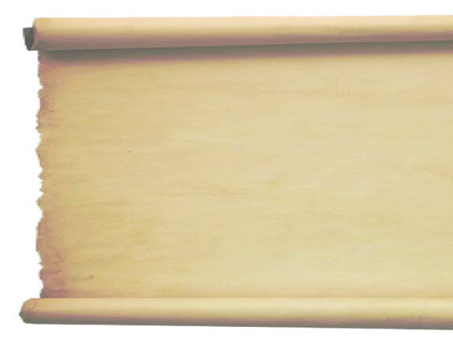<figcaption>Figure fig_ch02_p033_12 (Page 33)</figcaption></figure>
  <figure class="diagram-card" id="fig_ch02_p033_13"><figcaption>Figure fig_ch02_p033_13 (Page 33)</figcaption></figure>
  <figure class="diagram-card" id="fig_ch02_p033_14"><figcaption>Figure fig_ch02_p033_14 (Page 33)</figcaption></figure>
  <div class="page-content">
    <p>ǢšÄ¢Å§-&lt;<br>33<br>f”ā‘cf„DzsšŽšȹā‘c<br>n¢s„”c2300“Å•āÇڝŒƠ§Žx›Ú¡ƀĞŠŗՂ›š<br>̈́›v†›sšÎ›Æ “ċ› mų Žšȹ¡Ĺƀǯ› Œ—šz†ˆ„c
<br>ŠŗÄ ˆĚsšŽDzā‘š§ Œs‘›Æ ¡sš}Ĺ›Ž›Úų‚§<br>eښ¡Ĺ “ċ››¡ ‹Ž–Ƣ„šā¡‘ƀǯ› m¡ŦƽDZ<br>sšŽDzā‘š§g‚›Æ†›ų§†ŒÚ§e›šÄs’›ų‚§?<br>z sž}›¢ăÅų§xÅă¡xƫ§‚œŽŒš†āÇ£s¡sšĬ›Žų<br>z<br>z<br>z<br>z<br>z<br>z†ˆ„āÇ<br>Íz†ˆ„cÎmųšÆz†c<br>e…›“–›ăǚc<br>mųš§eŃc‚œ<br>iˆ¢šu›ă§sš}sÇ<br>sśă§Օ››}ā‘c<br>‚šŒ–¢Œts‘c<br>Žžˆ¡ƀ}Ĺ›e“›¡}<br>z†āÇǚ›ŽŒš›<br>‚šŒ–›ăgā¡†<br>š§z†ˆ„ādž›<br>“›Æ“ų‚§ˆ›Æښ<br>¢“„ā‘›Æ“›“›…<br>z†ˆ„ā¡‘ˆǯ›<br>ˆŽšŒÅ”›ÚųĬ§<br>āÇ<br>eŎśÆ sž}›¢ăÅų§ xÅă¡xƫ§ ‚œŽŒš†āÇ m}Úų<br>sš¢Ĺš‘c pų›ă Ƃ“Åśڝų sš¢Ĺš‘c Œ‚›Åų<br>“¡Ž Š—Œš†›Úsc ˆ›ŦƩsc Njŗ¢š¡} ¢sÇڝ<br>sc<br>¡xƮų›}¢Ĺš‘c “ċ››¡<br>ȼœsÇ –ǵ‚ũŽš›<br>zœ“›Úų sš¢Ĺš‘c ÷šŒā‘›c †uŽā‘›ŒǬ fŽš…<br>†šāÇ †›†›Æڝų sš¢Ĺš‘c “Dz‚DzǙ<br>“›”ǵš–<br>āÇ ˆ›Ŧ}Žų“ÅÚ§ e“›¡}<br>–ǵ‚ũŒš› –ĕŽ›ÚšÄ<br>s’›ų›}¢Ĺš‘c e“Å Š—Œš†›Ú¡ƀ}ų sš¢Ĺš‘c<br>“ċ›†›†›Æڝc<br>Œ—šz†ˆ„āÇeƒ“šf„DzsšŽšȹāÇ<br>Š›–›gfDZ†žǯšĬ›ÆgŦDz›ÆiĬš›Žų†›Ž“…›<br>Žšȹā‘›Æpųš›Žų“ċ›hŽšȹā‘¡} ŽžˆœsŽc<br>mā¡†š›Žų¡“ų§ˆŽ›¢”š…›ÚDZ<br>¢“„sšvĞśÆ ¢ušŅ–Œž—“Dz“ǚš§ †›†›ų›Ž<br>ų‚§e“Íz†Îmųš§e›¡ƀĞ‚§Օ›“DzšˆsŒš¢‚š¡}h¢ušŅ–Œž—āÇ<br>pŽ›}ŧǚ›ŽŒš›‚šŒ–›ÚšÄ‚}ā›g“Íz†ˆ„āÇÎmų›¡ƀН<br>z†ˆ„ā‘›¡sšÅ•›sŒ›¢ăšÆˆš„†csă“}ś¡źc†uŽā‘¡}c“‘Å㍛¢Ú§<br>†›ă să“}¢Ĺš¡}šƀc<br>“Dz‚DzǙ sŽs­”“ǙÚ‘¡} †›Åƣš¢sůā‘š›<br>†uŽāÇ Œš› gŎśǬ “Dz‚DzǙŒš –šƠśs Ƃ“Åņā¡‘ n¢sšˆ›ƀ›<br>ښ†c⌡ƀ}Ĺš†cx›†›ũāÇf“›”DzŒš›ŽųhˆDžšĹĹ›Æ<br>¢ušŅā¡‘e}›ǚš†ŒšÚ›‹Ž“Dz“ǚeƂ‚Dz䌚›<br>ST-203-3-SOC. SCI-I (M)-9-VOL-1</p>
  </div>
</section>
<section class="page-section" id="page-34">
  <div class="page-header"><span class="page-number">Page 34</span></div>
  <figure class="diagram-card" id="fig_ch02_p034_01"><figcaption>Figure fig_ch02_p034_01 (Page 34)</figcaption></figure>
  <figure class="diagram-card" id="fig_ch02_p034_02"><figcaption>Figure fig_ch02_p034_02 (Page 34)</figcaption></figure>
  <figure class="diagram-card" id="fig_ch02_p034_03">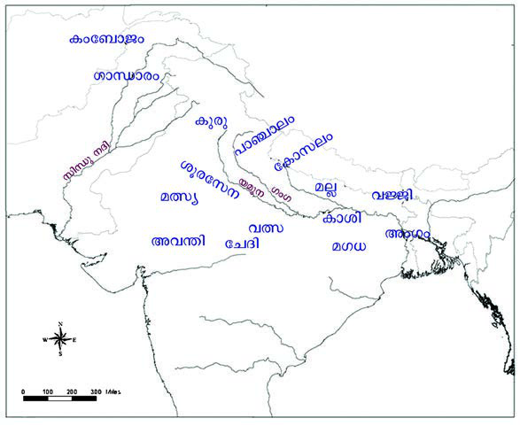<figcaption>Figure fig_ch02_p034_03 (Page 34)</figcaption></figure>
  <figure class="diagram-card" id="fig_ch02_p034_04"><figcaption>Figure fig_ch02_p034_04 (Page 34)</figcaption></figure>
  <figure class="diagram-card" id="fig_ch02_p034_05"><figcaption>Figure fig_ch02_p034_05 (Page 34)</figcaption></figure>
  <figure class="diagram-card" id="fig_ch02_p034_06"><figcaption>Figure fig_ch02_p034_06 (Page 34)</figcaption></figure>
  <figure class="diagram-card" id="fig_ch02_p034_07"><figcaption>Figure fig_ch02_p034_07 (Page 34)</figcaption></figure>
  <figure class="diagram-card" id="fig_ch02_p034_08"><figcaption>Figure fig_ch02_p034_08 (Page 34)</figcaption></figure>
  <figure class="diagram-card" id="fig_ch02_p034_09"><figcaption>Figure fig_ch02_p034_09 (Page 34)</figcaption></figure>
  <figure class="diagram-card" id="fig_ch02_p034_10"><figcaption>Figure fig_ch02_p034_10 (Page 34)</figcaption></figure>
  <figure class="diagram-card" id="fig_ch02_p034_11"><figcaption>Figure fig_ch02_p034_11 (Page 34)</figcaption></figure>
  <div class="page-content">
    <p>–šŒž—Dz”šȼc-<br>34<br>e…Dzšc<br>Օ›¢š}cŒĴ›¢†š}ŒǬg’ˆ›Ž›šĹŠŰcgښĹ§<br>“‘Åų“ų g‚§ e“Ž“Ž¡} Ƃ¢„”c mų sš’§xƀš}§<br>Žžˆ¡ƀ}Ĺ›gā¡†š§ŽšȹŽžˆœsŽcšƒšÅƒDzŒš›<br>ŜÅų‚§ ŠŗՂ›š ÍecuĹŽ†›sšÎ›Æ gŎ<br>śÆ †›“›Æ “ų 16 Žšȹā¡‘ƀǯ› ˆųĬ§ g“<br>͌—šz†ˆ„āÇÎ mųš§ e›¡ƀĞ‚§ ¢ŒÆ “›“Ž›ă<br>Œšǯā¡‘ xŽ›ŅsšŽÅ ͎ĬDZ †uŽ“ÆڎcÎ mųš§<br>“›¢”•›ƀ›Úų‚§<br>x“¡} ¡sš}Ĺ›Ž›Úų ‹žˆ}śÆ †›ų§ 16 Œ—šz†<br>ˆ„ā¡‘s¡ĬśˆĞ›s¡ƀ}Ĺs<br>z<br>z<br>z<br>z<br>z<br>z<br>z<br>z<br>z<br>z<br>z<br>z<br>z<br>z<br>z<br>z<br>†uŽāÇ<br>„œÅv†š‘¡ĹšŅ<br>s’›Ě§Šŗ†c”›•Dz<br>†šf†ŭ†cs”›<br>†uŽĹ›Æmś¢ăÅų<br>†›Ž“…›sšŽDzāÇ<br>–c–šŽ›ăsžĞśÆ<br>Šŗ¡ź†›Å“š“c<br>s}ų“ųsšĞ›†Ǭ›¡<br>ŒÃs}›sÇŒšŅŒǬ<br>s”›†uŽĹ›Æ“ă§<br>ŒŽ¡Ĺ“Ž›ÚŽ¡‚ųc<br>xƠŽšzê—Njš“Ǚ›<br>–š¢s‚s­–šcŠ›<br>“šŽš–›‚}ā›<br>“›†uŽā‘š›Ž›<br>ځceŦDz”ǵš–Ĺ›<br>†š›‚›Ž¡Ě}¢ÚĬ<br>¡‚ųcf†ŭÄe‹›Ƃš<br>¡ƀНŠŗՂ›š<br>̈́›v†›sš›Î¡h<br>“›“ŽĹ›Æ†›ų§<br>m¡Ŧš¡ÚsšŽDzā‘š§<br>†›āÇŒ†ǡ›šÚ›‚§?<br>†<br>e”§Œsc<br>16Œ—šz†ˆ„āÇ<br>‹žˆ}c</p>
  </div>
</section>
<section class="page-section" id="page-35">
  <div class="page-header"><span class="page-number">Page 35</span></div>
  <figure class="diagram-card" id="fig_ch02_p035_01"><figcaption>Figure fig_ch02_p035_01 (Page 35)</figcaption></figure>
  <figure class="diagram-card" id="fig_ch02_p035_02"><figcaption>Figure fig_ch02_p035_02 (Page 35)</figcaption></figure>
  <figure class="diagram-card" id="fig_ch02_p035_03"><figcaption>Figure fig_ch02_p035_03 (Page 35)</figcaption></figure>
  <figure class="diagram-card" id="fig_ch02_p035_04"><figcaption>Figure fig_ch02_p035_04 (Page 35)</figcaption></figure>
  <figure class="diagram-card" id="fig_ch02_p035_05"><figcaption>Figure fig_ch02_p035_05 (Page 35)</figcaption></figure>
  <figure class="diagram-card" id="fig_ch02_p035_06"><figcaption>Figure fig_ch02_p035_06 (Page 35)</figcaption></figure>
  <figure class="diagram-card" id="fig_ch02_p035_07"><figcaption>Figure fig_ch02_p035_07 (Page 35)</figcaption></figure>
  <figure class="diagram-card" id="fig_ch02_p035_08"><figcaption>Figure fig_ch02_p035_08 (Page 35)</figcaption></figure>
  <figure class="diagram-card" id="fig_ch02_p035_09"><figcaption>Figure fig_ch02_p035_09 (Page 35)</figcaption></figure>
  <div class="page-content">
    <p>ǢšÄ¢Å§-&lt;<br>35<br>f”ā‘cf„DzsšŽšȹā‘c<br>Œ—šz†ˆ„ā‘›¡‹Ž–c“›…š†c<br>–Œsš›sՂ›sÇŒ—šz†ˆ„ā‘›¡‹Ž–Ƣ„š<br>¡Ĺڝ›ă§x›“›“ŽādžÆsųĬ§eښĹ§<br>sšŽDz䌌š †›s‚›ˆ›Ž›“§ –Ƣ„š“c<br>ǚ›Ž<br>£–†Dz“c †›“›Æ“ųˆš›‹š•›ÆŽx›Ú¡ƀĞ<br>÷Ūā‘›Æsšų͊›Îmųˆ„c†›s‚›¡š§<br>eьšÚų‚§ ͋šuÎ mų‚§ Œ¡ǯšŽ‚Žc †›s‚›š<br>›Žų…š†DzāÇsųsš›sÇmų›“š›Žų<br>ŒtDzŒšc †›s‚›š› †Æs››Žų‚§ “†ā‘›Æ<br>‚šŒ–›ă›Žų“Å “†“›‹“āÇ †›s‚›š› †Æs›<br>¢ƀšÇ<br>sŽs­”¡Ĺš’›š‘›sÇ<br>†›Dž›‚„›“–c<br>Žšzš“›†š›¢zš›¡xƫ<br>‹Ž†›Å“—Ĺ›†š› …šŽš‘c i¢„DzšuǚÅ iĬš<br>›Žų͔‚ˆƒƖšǦÎmųՂ››ÆŽšzš“›¡†<br>–—š›ă›Žų¢–†š†›ˆ¢Žš—›‚Ä÷šŒ›mų›<br>“¡ŽˆŽšŒÅ”›ÚųĬ§Œ—šz†ˆ„āÇÚ§¢sšĞs‘c<br>‚ǚš††uŽ›s‘ciĬš›Žų<br>s­–DZŠ››¡Œ‚›Æ“Ň<br>Œ—šz†ˆ„Ĺ›¡ź‚ǚš†c
<br>Œu…›¡ Žšz“c”ā‘cƂ…š†ŽšzšÚŶšŽc<br><br><br>z<br>—ŽDzÿŽšz“c”cŠ›cŠ›–šŽÄezš‚”Ņ<br><br><br>z<br>”›”†šuŽšz“c”c”›”†šuÄ<br><br><br>z<br>†ŭŽšz“c”cŒ—šˆŃ†ŭÄ<br>Œu…¡}“‘Åă<br>ˆ‚›†š§ Œ—šz†ˆ„āÇ ‚ƣ›Æ e…›sšŽĹ›†¢“Ĭ› †›ŽŦŽc<br>ŗā‘›ÆnÅ¡ƀĞ›Žųg‚›ÆeŦ›ŒŒš›“›z›ă‚Œu…š<br>›Žų‹žˆ}śÆ (1)†›ų§Œu…¡} ǚš†cs¡ĬŝsŒu…<br>gų¡Ĺ n‚§ –cǚš†Ĺ›Æ iÇ¡ƀ}ų Ƃ¢„”Œš›Žų¡“ų§<br>s¡ĬŚÄ–š…›Ú¢Œš?<br>†ƽ Œ’ ‹›Úų iƈš„†äŒ‚Ǭ Ƃ¢„”Œš›Žų Œu…<br>sž}š¡‚…šŽš‘cgŽƠ›Ž§†›¢äˆ“ciĬš›Žųe‚›†šÆiˆ<br>sŽāÇڝc f…āÇڝc f“”DzŒš gŽƠ§ e“›¡}Ĺ¡ų<br>‹DzŒš›eښĹ§ŗā‘›Æf†sÇƂ…š†v}sŒš›Žų<br>Œu…›¡“†ā‘›Æf†sǍ¢ƒǐciĬš›Žųg‚§Œu…¡}<br>ŗ“›zc iƀšÚ› ucuc e‚›¡ź ¢ˆš•s†„›s‘c xŽÚ§<br>u‚šu‚–­sŽDzāÇiƀ“ŽĹsc¡xƫŠ›cŠ›–šŽÄezš<br>‚”Ņ‚}ā›s’›“ǯ‹Žš…›sšŽ›s‘cŒu…›ÆiĬš›Žų<br>¢ušŅŽšȹœ“Dz“ǚ›Æ†›ų§Œ—šz†ˆ„ā‘›¢ÚǬ“‘Å㍝¡}<br>“›“›…vĞāÇe“¡}–“›¢”•‚sÇmų›“s¡ĬśxÅă<br>¡xƮs</p>
  </div>
</section>
<section class="page-section" id="page-36">
  <div class="page-header"><span class="page-number">Page 36</span></div>
  <figure class="diagram-card" id="fig_ch02_p036_01"><figcaption>Figure fig_ch02_p036_01 (Page 36)</figcaption></figure>
  <figure class="diagram-card" id="fig_ch02_p036_02"><figcaption>Figure fig_ch02_p036_02 (Page 36)</figcaption></figure>
  <figure class="diagram-card" id="fig_ch02_p036_03"><figcaption>Figure fig_ch02_p036_03 (Page 36)</figcaption></figure>
  <figure class="diagram-card" id="fig_ch02_p036_04"><figcaption>Figure fig_ch02_p036_04 (Page 36)</figcaption></figure>
  <figure class="diagram-card" id="fig_ch02_p036_05"><figcaption>Figure fig_ch02_p036_05 (Page 36)</figcaption></figure>
  <figure class="diagram-card" id="fig_ch02_p036_06"><figcaption>Figure fig_ch02_p036_06 (Page 36)</figcaption></figure>
  <figure class="diagram-card" id="fig_ch02_p036_07"><figcaption>Figure fig_ch02_p036_07 (Page 36)</figcaption></figure>
  <figure class="diagram-card" id="fig_ch02_p036_08"><figcaption>Figure fig_ch02_p036_08 (Page 36)</figcaption></figure>
  <figure class="diagram-card" id="fig_ch02_p036_09"><figcaption>Figure fig_ch02_p036_09 (Page 36)</figcaption></figure>
  <figure class="diagram-card" id="fig_ch02_p036_10"><figcaption>Figure fig_ch02_p036_10 (Page 36)</figcaption></figure>
  <figure class="diagram-card" id="fig_ch02_p036_11">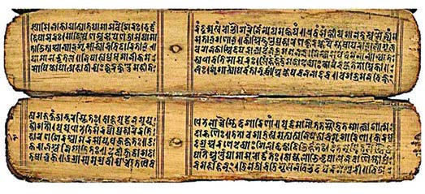<figcaption>Figure fig_ch02_p036_11 (Page 36)</figcaption></figure>
  <figure class="diagram-card" id="fig_ch02_p036_12"><figcaption>Figure fig_ch02_p036_12 (Page 36)</figcaption></figure>
  <figure class="diagram-card" id="fig_ch02_p036_13"><figcaption>Figure fig_ch02_p036_13 (Page 36)</figcaption></figure>
  <figure class="diagram-card" id="fig_ch02_p036_14"><figcaption>Figure fig_ch02_p036_14 (Page 36)</figcaption></figure>
  <figure class="diagram-card" id="fig_ch02_p036_15"><figcaption>Figure fig_ch02_p036_15 (Page 36)</figcaption></figure>
  <div class="page-content">
    <p>–šŒž—Dz”šȼc-<br>36<br>e…Dzšc<br>eєšȼ“c–žšcu–›ŗšŦ“c<br>Œ­ŽDzŽšzDz¡Ĺڝ›ă§“›“ŽāÇ<br>†Æsų Ƃ…š† xŽ›Ņ¢Žt<br>sž}›š§ s­}›DzÄ Žx›ă<br>eєšȼc£Œ–žŽ›¡ˆŽš<br>“Ǚ<br>÷Ū”š“›‹šuś¡ź<br>‚“†š›Žų fÅ ”DzšŒ<br>”šȼ›Ú§ ‚ĕš“žŽ›¡ pŽ<br>ˆį›‚†›Æ†›ųš§eєš<br>ȼś¡ź £s¡’ĹƂ‚›‹›ă‚§1907Æ”DzšŒ”šȼ›g‚§Ƃ–›ŗœsŽ›ăˆ‚›<br>†ĕ§e…Dzšā‘š§hՂ›ÚǬ‚§n’v}sā‘›Æeƒ“š–žDZuā‘›Æ<br>jų›š§pŽŽšzDzc†›†›Æڝų¡‚ų§eєšȼśÆƂ‚›ˆš„›Úų<br>z–ǵšŒ›<br><br>Žšzš“§<br>z eŒš‚DzÅ <br>Œũ›ŒšÅ<br>z z†ˆ„c<br><br>‹ž¢Œtcz†ā‘c<br>z „Åuc<br> ¢sšĞ¡sĞ›–cŽä›ăǚc<br>z¢sš”c<br><br>tz†š“§<br>z „į<br><br>†œ‚›†Dzšc<br>z Œ›Ņc<br><br>–­ǣ„ŽšzDzāÇ<br>‹žŒ›”šȼ–“›¢”•‚sÇŒu…¡}“‘Å㍛ÆƂ…š†<br>sšŽŒš›Žų¡“ų§ †›āÇ sŽ‚ų¢Ĭš? mŦ<br>¡sšĬ§?<br>Œu…›Æ†›ų§Œ­ŽDzŽšzDzś¢Ú§<br>Œu…›Æ“›“›…Žšz“c”āÇ‹Žc†}ś›Žųe“›Æ†ŭ<br>“c”Ĺ›¡e“–š†¡Ĺ‹Žš…›sšŽ›š›Žų…††ŭ¡†ˆŽšz<br>¡ƀ}Ĺ›Š›–›g321ÆxůužŒ­ŽDzÄŒ­ŽDzŽšzDzcǚšˆ›ă<br>Œ­ŽDzŽšzDzś¡ź‚ǚš†Œšˆš}œˆŅcgų¡Ĺ ˆšǯ§†
†u<br>Ž¡Ĺڝ›ă§ ¡ŒuǙ†œ–§ mų ÷œÚ§ ŽšzƂ‚›†›…›¡} “›“Ž<br>Œš§Œs‘›Æ†Æs››Ž›Úų‚§s­}›DzÄm’‚›ÍeєšȻcÎ<br>e¢”šs xâ“Åś¡} ›t›‚āÇ eښĹ§ ƂxšŽĹ›Æ<br>iĬš›Žų †šāÇ ‚}ā›“ Œ­ŽDzŽšzDzś¡ź xŽ›Ņ<br>ˆ~†Ĺ›†–—š›Úų<br>g‚§Œ¢†š—ŽŒš“›†uŽŒš§h†uŽ¡ĹxǮ›“›¡šŽŒ‚›Ĭ§<br>g‚›†§64Ƃ¢“”†s“š}ā‘c…šŽš‘c¢ušˆŽā‘ŒĬ§ŽĬcŒžųc†›s‘ǫ<br>“œ}sdž›Åƣ›ă›Ž›Úų‚§ŒŽ“c¡x‘›ÚĞs‘ciˆ¢šu›ăš§Žšzš“›¡ź<br>¡sšĞšŽ“cŒŽc¡sšĬ§ †›Åƣ›ă‚š§</p>
  </div>
</section>
<section class="page-section" id="page-37">
  <div class="page-header"><span class="page-number">Page 37</span></div>
  <figure class="diagram-card" id="fig_ch02_p037_01"><figcaption>Figure fig_ch02_p037_01 (Page 37)</figcaption></figure>
  <figure class="diagram-card" id="fig_ch02_p037_02"><figcaption>Figure fig_ch02_p037_02 (Page 37)</figcaption></figure>
  <figure class="diagram-card" id="fig_ch02_p037_03"><figcaption>Figure fig_ch02_p037_03 (Page 37)</figcaption></figure>
  <figure class="diagram-card" id="fig_ch02_p037_04"><figcaption>Figure fig_ch02_p037_04 (Page 37)</figcaption></figure>
  <figure class="diagram-card" id="fig_ch02_p037_05"><figcaption>Figure fig_ch02_p037_05 (Page 37)</figcaption></figure>
  <figure class="diagram-card" id="fig_ch02_p037_06"><figcaption>Figure fig_ch02_p037_06 (Page 37)</figcaption></figure>
  <figure class="diagram-card" id="fig_ch02_p037_07"><figcaption>Figure fig_ch02_p037_07 (Page 37)</figcaption></figure>
  <figure class="diagram-card" id="fig_ch02_p037_08"><figcaption>Figure fig_ch02_p037_08 (Page 37)</figcaption></figure>
  <figure class="diagram-card" id="fig_ch02_p037_09"><figcaption>Figure fig_ch02_p037_09 (Page 37)</figcaption></figure>
  <figure class="diagram-card" id="fig_ch02_p037_10"><figcaption>Figure fig_ch02_p037_10 (Page 37)</figcaption></figure>
  <figure class="diagram-card" id="fig_ch02_p037_11"><figcaption>Figure fig_ch02_p037_11 (Page 37)</figcaption></figure>
  <figure class="diagram-card" id="fig_ch02_p037_12"><figcaption>Figure fig_ch02_p037_12 (Page 37)</figcaption></figure>
  <figure class="diagram-card" id="fig_ch02_p037_13"><figcaption>Figure fig_ch02_p037_13 (Page 37)</figcaption></figure>
  <figure class="diagram-card" id="fig_ch02_p037_14"><figcaption>Figure fig_ch02_p037_14 (Page 37)</figcaption></figure>
  <figure class="diagram-card" id="fig_ch02_p037_15"><figcaption>Figure fig_ch02_p037_15 (Page 37)</figcaption></figure>
  <figure class="diagram-card" id="fig_ch02_p037_16"><figcaption>Figure fig_ch02_p037_16 (Page 37)</figcaption></figure>
  <figure class="diagram-card" id="fig_ch02_p037_17">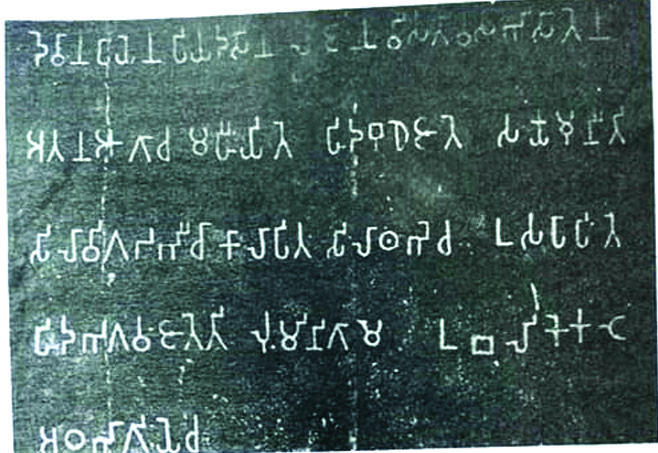<figcaption>Figure fig_ch02_p037_17 (Page 37)</figcaption></figure>
  <figure class="diagram-card" id="fig_ch02_p037_18"><figcaption>Figure fig_ch02_p037_18 (Page 37)</figcaption></figure>
  <figure class="diagram-card" id="fig_ch02_p037_19"><figcaption>Figure fig_ch02_p037_19 (Page 37)</figcaption></figure>
  <div class="page-content">
    <p>ǢšÄ¢Å§-&lt;<br>37<br>f”ā‘cf„DzsšŽšȹā‘c<br>Œ­ŽDzŽšzDzś¡ nǯ“c Ƃ…š† ‹Žš…›sšŽ› e¢”šs xâ“Å<br>śš›Žų e¢Ŕ—c s›cuc gų¡Ĺ pœ•
 ‹žˆ}c 2 <br>Njŗ›Ús
f⌛ă§sœ’}ڛ¢‚š¡}Œ­ŽDzŽšzDzc“›”šŒš›s›cu<br>ŗš†ŦŽce¢”šsxâ“ÅśŗāÇi¢ˆä›ă‚š› ›t›‚<br>ā‘›Æ¢Žt¡ƀ}Ĺ››Ž›Úų<br>Œ›Ä¢„›cŠ›†›
›t›‚c<br>͊ŗ”šsDZŒ†› z†›ă h ǙĹ§ ¢„“š†šcˆ› ˆ›„–› s›Žœ}…šŽĹ›†§<br>gŽˆ‚“Å•Ĺ›†¢”•c ¢†Ž›Ğ “ų§ fŽš…††}ś f ˆDZšŃš“§ z†›ă<br>ǙŒš§ g‚§ mų§ e››Úų‚›† ¢“Ĭ› g“›¡} sŽ›ÿÆ Œ‚››†šÆ<br>xǮ¡ƀĞ ǘžˆc Ǚšˆ›ă cŠ›†››ǫ f‘s¡‘ ͊›Î›Æ †›ų§ p’›“š<br>ڝsc e“Å “›‘“›¡ź mĞ›Æ pŽ ‹šuc ( 1<br>8) ŒšŅc ͋šuΌš› ¡sš}ĹšÆ<br>Œ‚›¡ųc ‚œŽŒš†›Úsc ¡xƪÎ<br>¢†ƀš‘›¡Œ›Ä¢„››¡cŠ›†›
›t›‚“ce‚›¡źˆŽ›‹š•Œš§Œs‘›Æ<br>†Æs››Ž›Úų‚§<br>z<br>z<br>z<br>z<br>h›t›‚Ĺ›Æ†›ų§Œ­ŽDzŽšzDz¡Ĺڝ›ă§m¡Ŧš¡ÚsšŽDzā<br>‘š§†›āÇŒ†ǡ›šÚ›‚§?</p>
  </div>
</section>
<section class="page-section" id="page-38">
  <div class="page-header"><span class="page-number">Page 38</span></div>
  <figure class="diagram-card" id="fig_ch02_p038_01"><figcaption>Figure fig_ch02_p038_01 (Page 38)</figcaption></figure>
  <figure class="diagram-card" id="fig_ch02_p038_02"><figcaption>Figure fig_ch02_p038_02 (Page 38)</figcaption></figure>
  <figure class="diagram-card" id="fig_ch02_p038_03"><figcaption>Figure fig_ch02_p038_03 (Page 38)</figcaption></figure>
  <figure class="diagram-card" id="fig_ch02_p038_04"><figcaption>Figure fig_ch02_p038_04 (Page 38)</figcaption></figure>
  <figure class="diagram-card" id="fig_ch02_p038_05"><figcaption>Figure fig_ch02_p038_05 (Page 38)</figcaption></figure>
  <figure class="diagram-card" id="fig_ch02_p038_06"><figcaption>Figure fig_ch02_p038_06 (Page 38)</figcaption></figure>
  <figure class="diagram-card" id="fig_ch02_p038_07"><figcaption>Figure fig_ch02_p038_07 (Page 38)</figcaption></figure>
  <figure class="diagram-card" id="fig_ch02_p038_08"><figcaption>Figure fig_ch02_p038_08 (Page 38)</figcaption></figure>
  <figure class="diagram-card" id="fig_ch02_p038_09"><figcaption>Figure fig_ch02_p038_09 (Page 38)</figcaption></figure>
  <figure class="diagram-card" id="fig_ch02_p038_10"><figcaption>Figure fig_ch02_p038_10 (Page 38)</figcaption></figure>
  <figure class="diagram-card" id="fig_ch02_p038_11"><figcaption>Figure fig_ch02_p038_11 (Page 38)</figcaption></figure>
  <figure class="diagram-card" id="fig_ch02_p038_12"><figcaption>Figure fig_ch02_p038_12 (Page 38)</figcaption></figure>
  <figure class="diagram-card" id="fig_ch02_p038_13"><figcaption>Figure fig_ch02_p038_13 (Page 38)</figcaption></figure>
  <figure class="diagram-card" id="fig_ch02_p038_14"><figcaption>Figure fig_ch02_p038_14 (Page 38)</figcaption></figure>
  <figure class="diagram-card" id="fig_ch02_p038_15"><figcaption>Figure fig_ch02_p038_15 (Page 38)</figcaption></figure>
  <figure class="diagram-card" id="fig_ch02_p038_16"><figcaption>Figure fig_ch02_p038_16 (Page 38)</figcaption></figure>
  <figure class="diagram-card" id="fig_ch02_p038_17"><figcaption>Figure fig_ch02_p038_17 (Page 38)</figcaption></figure>
  <figure class="diagram-card" id="fig_ch02_p038_19"><figcaption>Figure fig_ch02_p038_19 (Page 38)</figcaption></figure>
  <figure class="diagram-card" id="fig_ch02_p038_20"><figcaption>Figure fig_ch02_p038_20 (Page 38)</figcaption></figure>
  <figure class="diagram-card" id="fig_ch02_p038_21"><figcaption>Figure fig_ch02_p038_21 (Page 38)</figcaption></figure>
  <figure class="diagram-card" id="fig_ch02_p038_22"><figcaption>Figure fig_ch02_p038_22 (Page 38)</figcaption></figure>
  <figure class="diagram-card" id="fig_ch02_p038_23"><figcaption>Figure fig_ch02_p038_23 (Page 38)</figcaption></figure>
  <figure class="diagram-card" id="fig_ch02_p038_24"><figcaption>Figure fig_ch02_p038_24 (Page 38)</figcaption></figure>
  <figure class="diagram-card" id="fig_ch02_p038_25"><figcaption>Figure fig_ch02_p038_25 (Page 38)</figcaption></figure>
  <figure class="diagram-card" id="fig_ch02_p038_26"><figcaption>Figure fig_ch02_p038_26 (Page 38)</figcaption></figure>
  <figure class="diagram-card" id="fig_ch02_p038_27">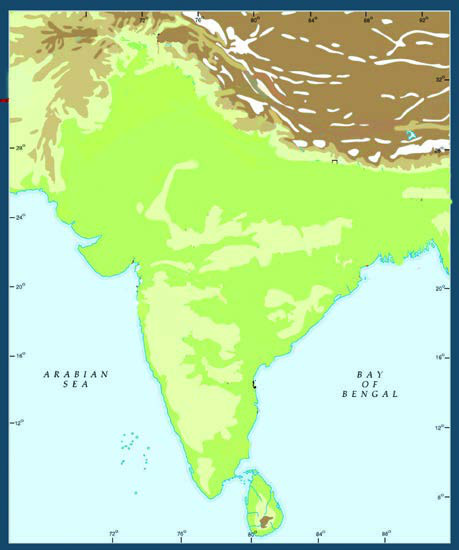<figcaption>Figure fig_ch02_p038_27 (Page 38)</figcaption></figure>
  <figure class="diagram-card" id="fig_ch02_p038_28"><figcaption>Figure fig_ch02_p038_28 (Page 38)</figcaption></figure>
  <figure class="diagram-card" id="fig_ch02_p038_29"><figcaption>Figure fig_ch02_p038_29 (Page 38)</figcaption></figure>
  <figure class="diagram-card" id="fig_ch02_p038_30"><figcaption>Figure fig_ch02_p038_30 (Page 38)</figcaption></figure>
  <figure class="diagram-card" id="fig_ch02_p038_31"><figcaption>Figure fig_ch02_p038_31 (Page 38)</figcaption></figure>
  <div class="page-content">
    <p>–šŒž—Dz”šȼc-<br>38<br>e…Dzšc<br>‚ä”›<br>iċ›†›<br>–“Łu›Ž›<br>s›cuc<br>¡‚š”š›<br>ˆš}œˆŅc<br>Ƃ“›”Dzš‚ǚš†āÇ<br>ŽšzDz‚ǚš†c<br>Œ­ŽDz‹Žc<br>Œ­ŽDzŽšzDzc “›”šŒš›Žų¡“ų§ sĬ¢ƽš g†›<br>†ŒÚ§ e“Ž¡} ‹Ž–c“›…š†c mā¡†š›Žų<br>¡“ų§¢†šÚDZ<br>‹Ž–­sŽDzś†š›†ƣ¡} ŽšzDz¡Ĺ “›“›…–cǚš<br>†ā‘š› “›‹z›ă›ĞĬ¢ƽš ŒšŅŒƽ –cǚš†<br>āÇ¡ÚƽDZ ‚ǚš†ā‘ŒĬ§ Œ­ŽDzŽšzDz“c<br>gŎśÆ “›“›… Ƃ“›”Dzs‘š› “›‹z›ă›Žų<br>gŎc Ƃ“›”DzsÇ u“ÅĴŌšŽ¡} †›ũĹ›Ä<br>sœ’›š›Žų‚ǚš†Œšˆš}œˆŅcxâ“Åś<br>¡} ¢†Ž›ĞǬ†›ũĹ›š›Žų<br>‹žˆ}c 2Æ †›ų§ Ƃ“›”Dzš ‚ǚš<br>†āÇ s¡Ĭś ˆĞ›s ˆžÅśš<br>ڝs<br>‹žˆ}c<br>e¢”šs›t›‚āÇ<br>e¢”šsxâ“Åś¢}<br>‚š…šŽš‘c”›š›t›‚<br>āÇgŦDzÄiˆ‹žtį<br>ś¡ź“›“›…‹šuā‘›Æ<br>†›ų§‹›ă›ĞĬ§ƖšǦ›<br>t¢Žšǐ›eŽšŒ›s§›ˆ›s‘›<br>š§g“Žx›ă›ĞǬ‚§<br>e¢”šs›t›‚āÇf„Dz<br>Œš›“š›ă‚§1838Æ<br>Ɩ›Ğœ•sšŽ†š¡z›c–§<br>Ƃ›Ä¡–ƀ§f§‹žŽ›‹šuc<br>›t›‚ā‘›cÍ¢„“š†šc<br>ˆ›Î¢„“ŶšÅÚ§ Ƃ›¡ƀ<br>Ğ“Ä
mųš§Žšzš“›¡†<br>ˆŽšŒÅ”›ă›Ž›Úų‚§<br>mųšÆsÅĴš}s›¡<br>Œšǘ›i¢„u‘c†›ĞžÅmų›<br>“›}ā‘›¡›t›‚ā‘›Æ<br>Íe¢”šsÎmų¢ˆŽ§sššc<br>f…†›sgŦDz›Æiˆ<br>¢šu›Úų‹žŽ›‹šuc<br>›t›‚‹š•s‘cƖšǦ›<br>›ˆ››Æ†›ų§Žžˆ¡ƀĞ<br>‚š§<br>—›ŭ›<br>Šcuš‘›<br>Œš‘c<br>‚Œ›’§<br>ƖšǦ›</p>
  </div>
</section>
<section class="page-section" id="page-39">
  <div class="page-header"><span class="page-number">Page 39</span></div>
  <figure class="diagram-card" id="fig_ch02_p039_01"><figcaption>Figure fig_ch02_p039_01 (Page 39)</figcaption></figure>
  <figure class="diagram-card" id="fig_ch02_p039_02"><figcaption>Figure fig_ch02_p039_02 (Page 39)</figcaption></figure>
  <figure class="diagram-card" id="fig_ch02_p039_03"><figcaption>Figure fig_ch02_p039_03 (Page 39)</figcaption></figure>
  <figure class="diagram-card" id="fig_ch02_p039_04"><figcaption>Figure fig_ch02_p039_04 (Page 39)</figcaption></figure>
  <figure class="diagram-card" id="fig_ch02_p039_05"><figcaption>Figure fig_ch02_p039_05 (Page 39)</figcaption></figure>
  <figure class="diagram-card" id="fig_ch02_p039_06"><figcaption>Figure fig_ch02_p039_06 (Page 39)</figcaption></figure>
  <figure class="diagram-card" id="fig_ch02_p039_07"><figcaption>Figure fig_ch02_p039_07 (Page 39)</figcaption></figure>
  <figure class="diagram-card" id="fig_ch02_p039_08"><figcaption>Figure fig_ch02_p039_08 (Page 39)</figcaption></figure>
  <figure class="diagram-card" id="fig_ch02_p039_09"><figcaption>Figure fig_ch02_p039_09 (Page 39)</figcaption></figure>
  <figure class="diagram-card" id="fig_ch02_p039_10"><figcaption>Figure fig_ch02_p039_10 (Page 39)</figcaption></figure>
  <figure class="diagram-card" id="fig_ch02_p039_11"><figcaption>Figure fig_ch02_p039_11 (Page 39)</figcaption></figure>
  <figure class="diagram-card" id="fig_ch02_p039_12"><figcaption>Figure fig_ch02_p039_12 (Page 39)</figcaption></figure>
  <figure class="diagram-card" id="fig_ch02_p039_13"><figcaption>Figure fig_ch02_p039_13 (Page 39)</figcaption></figure>
  <figure class="diagram-card" id="fig_ch02_p039_14"><figcaption>Figure fig_ch02_p039_14 (Page 39)</figcaption></figure>
  <figure class="diagram-card" id="fig_ch02_p039_15"><figcaption>Figure fig_ch02_p039_15 (Page 39)</figcaption></figure>
  <figure class="diagram-card" id="fig_ch02_p039_16"><figcaption>Figure fig_ch02_p039_16 (Page 39)</figcaption></figure>
  <figure class="diagram-card" id="fig_ch02_p039_17"><figcaption>Figure fig_ch02_p039_17 (Page 39)</figcaption></figure>
  <figure class="diagram-card" id="fig_ch02_p039_18"><figcaption>Figure fig_ch02_p039_18 (Page 39)</figcaption></figure>
  <figure class="diagram-card" id="fig_ch02_p039_19"><figcaption>Figure fig_ch02_p039_19 (Page 39)</figcaption></figure>
  <figure class="diagram-card" id="fig_ch02_p039_20"><figcaption>Figure fig_ch02_p039_20 (Page 39)</figcaption></figure>
  <figure class="diagram-card" id="fig_ch02_p039_21"><figcaption>Figure fig_ch02_p039_21 (Page 39)</figcaption></figure>
  <figure class="diagram-card" id="fig_ch02_p039_22"><figcaption>Figure fig_ch02_p039_22 (Page 39)</figcaption></figure>
  <div class="page-content">
    <p>ǢšÄ¢Å§-&lt;<br>39<br>f”ā‘cf„DzsšŽšȹā‘c<br>¡‚ÚÄƂ“›”Dz<br>ˆ}›ĚšÄƂ“›”Dz<br>“}ÚÄƂ“›”Dz<br>s›’ÚÄƂ“›”Dz<br>Œ­ŽDzŶšŽ¡}£–†Dzś†§eĕ“›‹šuāÇiĬš›ŽųsššÇƀ}<br>s‚›Žƀ} ¢‚Ž§ uz¢–† †š“›s¢–† mų›“š›Žų e“<br>£–†›s ‹ŽĹ›¡ź xŒ‚<br>30 ecuā‘Ǭ –Œ›‚›š§<br>†›Å“—›ă›Žų‚§<br>‚¡źƂzsÇڛ}›Æ–—“Åś‚ǵ“c–Œš…š†“c†›†›ÅŚÄ<br>e¢”šs xâ“Åś ƂxŽ›ƀ›ă f”āÇ Íe¢”šs…ƣÎ …Åƣ
<br>mų›¡ƀ}ųe¢”šs¡ź”š–†ā‘›Æ†›ųš§†ƣÇg‚›¡†<br>ڝ›ă§Œ†ǡ›šÚ›‚§<br>e¢”šs…ƣ›¡Ƃ…š†f”āÇ‚š¡’¡Úš}Ĺ›Ž›Úų<br>e¢”šs…ƣ<br>…Åƣ
<br>Œǯ§Œ‚“›”ǵš–›s¢‘š}§–—›ǒ‚sš›Ús<br>Œ‚›Åų“¡ŽcuŽÚŶš¡ŽcŠ—Œš†›Ús<br>e}›Œs¢‘š}c¢Žšu›s¢‘š}c„sš›Ús<br>“›”šŒšŽšzDzś¡źsšŽDz䌌š‹ŽĹ›†c“›“›…<br>–šŒž—›s“›‹šuā¡‘ ¢šz›ƀ›ă§ †›Åŝų‚›†c<br>¢“Ĭ›Ǭ †Œš›Žų e¢”šs…ƣ¡ų§ ƂŒt<br>xŽ›ŅsšŽ›š ¡šŒ› ƒšˆÅ e‹›Ƃš¡ƀ}ų<br>¡šŒ›ƒšˆÅ<br>gų¡Ĺ gŦDzÄ ‹Ž–c“›…š†Ĺ›¡<br>n¡‚š¡Ú<br>–“›¢”•‚sÇ Œ­ŽDz‹Ž<br>–Ƣ„šĹ›Æ sššÄ s’›c xÅă<br>¡xƫ§ ‚šŽ‚ŒDz¡ƀ}Ĺs</p>
  </div>
</section>
<section class="page-section" id="page-40">
  <div class="page-header"><span class="page-number">Page 40</span></div>
  <figure class="diagram-card" id="fig_ch02_p040_01"><figcaption>Figure fig_ch02_p040_01 (Page 40)</figcaption></figure>
  <figure class="diagram-card" id="fig_ch02_p040_02"><figcaption>Figure fig_ch02_p040_02 (Page 40)</figcaption></figure>
  <figure class="diagram-card" id="fig_ch02_p040_03"><figcaption>Figure fig_ch02_p040_03 (Page 40)</figcaption></figure>
  <figure class="diagram-card" id="fig_ch02_p040_04"><figcaption>Figure fig_ch02_p040_04 (Page 40)</figcaption></figure>
  <figure class="diagram-card" id="fig_ch02_p040_05"><figcaption>Figure fig_ch02_p040_05 (Page 40)</figcaption></figure>
  <figure class="diagram-card" id="fig_ch02_p040_06"><figcaption>Figure fig_ch02_p040_06 (Page 40)</figcaption></figure>
  <figure class="diagram-card" id="fig_ch02_p040_07"><figcaption>Figure fig_ch02_p040_07 (Page 40)</figcaption></figure>
  <figure class="diagram-card" id="fig_ch02_p040_08"><figcaption>Figure fig_ch02_p040_08 (Page 40)</figcaption></figure>
  <figure class="diagram-card" id="fig_ch02_p040_09"><figcaption>Figure fig_ch02_p040_09 (Page 40)</figcaption></figure>
  <figure class="diagram-card" id="fig_ch02_p040_10"><figcaption>Figure fig_ch02_p040_10 (Page 40)</figcaption></figure>
  <figure class="diagram-card" id="fig_ch02_p040_11"><figcaption>Figure fig_ch02_p040_11 (Page 40)</figcaption></figure>
  <figure class="diagram-card" id="fig_ch02_p040_12"><figcaption>Figure fig_ch02_p040_12 (Page 40)</figcaption></figure>
  <figure class="diagram-card" id="fig_ch02_p040_13"><figcaption>Figure fig_ch02_p040_13 (Page 40)</figcaption></figure>
  <figure class="diagram-card" id="fig_ch02_p040_14"><figcaption>Figure fig_ch02_p040_14 (Page 40)</figcaption></figure>
  <figure class="diagram-card" id="fig_ch02_p040_15"><figcaption>Figure fig_ch02_p040_15 (Page 40)</figcaption></figure>
  <figure class="diagram-card" id="fig_ch02_p040_16"><figcaption>Figure fig_ch02_p040_16 (Page 40)</figcaption></figure>
  <figure class="diagram-card" id="fig_ch02_p040_17"><figcaption>Figure fig_ch02_p040_17 (Page 40)</figcaption></figure>
  <figure class="diagram-card" id="fig_ch02_p040_18"><figcaption>Figure fig_ch02_p040_18 (Page 40)</figcaption></figure>
  <figure class="diagram-card" id="fig_ch02_p040_19"><figcaption>Figure fig_ch02_p040_19 (Page 40)</figcaption></figure>
  <figure class="diagram-card" id="fig_ch02_p040_20"><figcaption>Figure fig_ch02_p040_20 (Page 40)</figcaption></figure>
  <figure class="diagram-card" id="fig_ch02_p040_21"><figcaption>Figure fig_ch02_p040_21 (Page 40)</figcaption></figure>
  <figure class="diagram-card" id="fig_ch02_p040_22">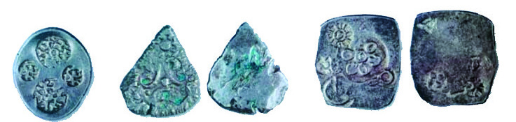<figcaption>Figure fig_ch02_p040_22 (Page 40)</figcaption></figure>
  <figure class="diagram-card" id="fig_ch02_p040_23"><figcaption>Figure fig_ch02_p040_23 (Page 40)</figcaption></figure>
  <figure class="diagram-card" id="fig_ch02_p040_24"><figcaption>Figure fig_ch02_p040_24 (Page 40)</figcaption></figure>
  <figure class="diagram-card" id="fig_ch02_p040_25"><figcaption>Figure fig_ch02_p040_25 (Page 40)</figcaption></figure>
  <figure class="diagram-card" id="fig_ch02_p040_26"><figcaption>Figure fig_ch02_p040_26 (Page 40)</figcaption></figure>
  <figure class="diagram-card" id="fig_ch02_p040_27"><figcaption>Figure fig_ch02_p040_27 (Page 40)</figcaption></figure>
  <figure class="diagram-card" id="fig_ch02_p040_28"><figcaption>Figure fig_ch02_p040_28 (Page 40)</figcaption></figure>
  <figure class="diagram-card" id="fig_ch02_p040_29"><figcaption>Figure fig_ch02_p040_29 (Page 40)</figcaption></figure>
  <figure class="diagram-card" id="fig_ch02_p040_30">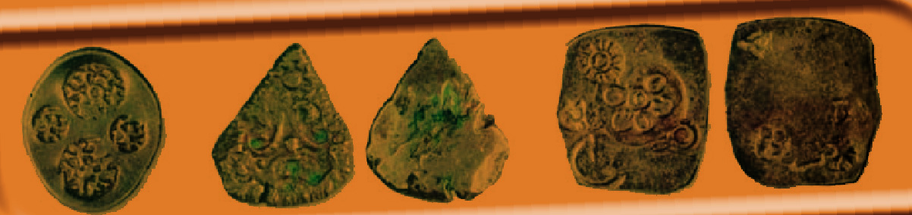<figcaption>Figure fig_ch02_p040_30 (Page 40)</figcaption></figure>
  <figure class="diagram-card" id="fig_ch02_p040_31"><figcaption>Figure fig_ch02_p040_31 (Page 40)</figcaption></figure>
  <figure class="diagram-card" id="fig_ch02_p040_32"><figcaption>Figure fig_ch02_p040_32 (Page 40)</figcaption></figure>
  <figure class="diagram-card" id="fig_ch02_p040_33">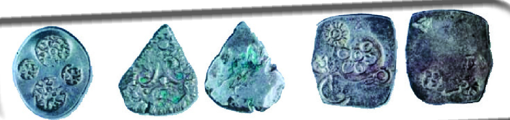<figcaption>Figure fig_ch02_p040_33 (Page 40)</figcaption></figure>
  <figure class="diagram-card" id="fig_ch02_p040_34"><figcaption>Figure fig_ch02_p040_34 (Page 40)</figcaption></figure>
  <figure class="diagram-card" id="fig_ch02_p040_35"><figcaption>Figure fig_ch02_p040_35 (Page 40)</figcaption></figure>
  <figure class="diagram-card" id="fig_ch02_p040_36"><figcaption>Figure fig_ch02_p040_36 (Page 40)</figcaption></figure>
  <figure class="diagram-card" id="fig_ch02_p040_37"><figcaption>Figure fig_ch02_p040_37 (Page 40)</figcaption></figure>
  <figure class="diagram-card" id="fig_ch02_p040_38"><figcaption>Figure fig_ch02_p040_38 (Page 40)</figcaption></figure>
  <figure class="diagram-card" id="fig_ch02_p040_39"><figcaption>Figure fig_ch02_p040_39 (Page 40)</figcaption></figure>
  <figure class="diagram-card" id="fig_ch02_p040_40"><figcaption>Figure fig_ch02_p040_40 (Page 40)</figcaption></figure>
  <div class="page-content">
    <p>–šŒž—Dz”šȼc-<br>40<br>e…Dzšc<br>să“}ś¡ź“‘Åă<br>gŦDz›Æ<br>ƂxšŽĹ›Ĭš›Žų<br>f„Dzsš<br>†šā‘š§<br>x›ŅśÆ sšų‚§ g“ Œŝšÿ›‚ †šāÇ (Punch Marked <br>Coins) mų›¡ƀ}ų¡“Ǭ››c¡xƠ›Œš§g“†›Åƣ›ă›Ž›<br>ڝų‚§ să“}ś†š› †šāÇ iˆ¢šu›ă›Žų mų‚›†§<br>¡‚‘›“š›“<br>sŽ“’›c s}Ɠ’›c †„›sÇ<br>“’›c –š…†āÇ ¡sšĬ¢ˆš<br>›Žų<br>…š†DzāÇ<br>‚›Ĺ<br>ŽāÇ<br>¢š—c<br>‚}ā›“š<br>›Žų Ƃ…š† să“}“ǙÚÇ<br>eښ¡Ĺ ˆǙsā‘›ÆˆŽšŒÅ<br>”›ÚųÍ¢–ŧÎ͖šĹ“š—sÅÎ<br>mųœˆ„āÇsă“}ښ¡Žš§<br>–žx›ƀ›Úų‚§<br>gŦDzÄiˆ‹žtįśÆŒ—šz<br>†ˆ„āÇŽžˆc¡sšĬˆDžšĹ<br>“c e‚§ ˆ›ųœ}§ Œ­ŽDzŽšzDz<br>Œš›ˆŽ›Œ›ăsšŽDzā‘Œš¢ƽšg‚“¡ŽxÅă¡xƫ‚§e¢‚<br>sšĹ§–Œš†ŒšŽšȹœŒšǯāÇÚ§–šäDzc“—›ăŒ¡ǯšŽ¢Œt<br>¡‚ڝs›’Účž¢šƀ›¡÷œ–§f›Žų<br>‹žˆ}c †›Žœä›ă§<br>n¡‚š¡ÚƂ¢„”ā<br>‘›ž¡}š§să“}c<br>†}ų¡‚ų§s¡Ĭś¢Žt<br>¡ƀ}Ĺs<br>e…Dzšc<br>‹žˆ}c<br>‹žˆ}c<br>‚ä”›<br>iċ›†›<br>–“Łu›Ž›<br>¢Ɩšă§<br>ˆš}œˆŅ<br>‚šƤ›ž›</p>
  </div>
</section>
    </main>
    <footer>
      <div class="nav-bar"><a href="part_1_pages_120.html">← Pages 1-20</a><a href="index.html">☰ Index</a><a href="part_1_pages_4160.html">Pages 41-60 →</a></div>
    </footer>
  </div>
</body>
</html>
